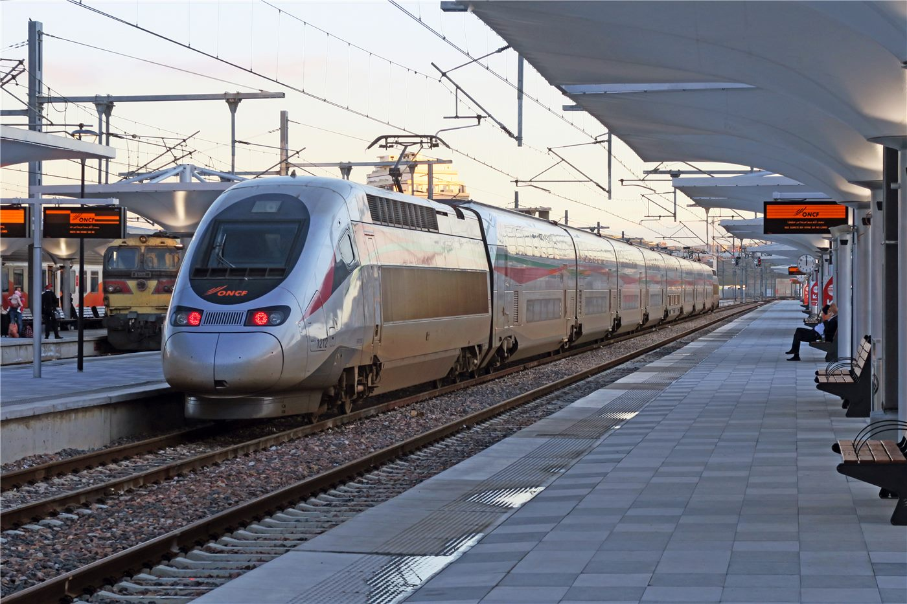

橋중국
중국중국, EU에 '자유무역·대화' 강조… 통상 협력 의지
중국 외교부, EU와의 경제·통상 관계는 상호이익이라며 보호무역 자제 촉구.
중국 외교부, EU와의 경제·통상 관계는 상호이익이라며 보호무역 자제 촉구.

왕이 외교부장, 글로벌 거버넌스 개혁 방향 제시. 중국, 7월 세계 AI 회의 개최 예정.

상무부 집계, 서비스 교역 확대 지속. 디지털·관광·운송이 견인.

수출 증가폭이 둔화되며 흑자가 축소됐다. 대외 수요 약화 신호로 읽힌다.

중국과 유럽연합이 무역·투자 현안을 정례적으로 다룰 협상 메커니즘을 공식 출범시켰다. 산하에 4개 분과를 두어 공급망·시장접근 등 구체 의제를 다루기로 했다. 통상 마찰이 이어지는 가운데 대화 채널을 제도화했다는 데 의미가 있다.

왕이 중국 외교부장이 덴마크·스웨덴·핀란드·노르웨이 등 북유럽 4개국을 방문한다. 그린·해운·과학기술 협력과 지역 정세가 의제로 거론된다.

시진핑 중국 국가주석과 세이셸 대통령이 양국 수교 50주년을 맞아 축전을 주고받았다. 양측은 해양·관광·기후 분야 협력을 이어가기로 했다.

중국 상무부가 캐나다산 완두전분에 대한 반덤핑 조사에서 예비판정을 내렸다. 통상 규범에 따른 절차라는 게 중국 측 설명이다.

중국 지도부가 여름철을 앞두고 방재와 가뭄 대응을 전면 점검하며 ‘큰 홍수·큰 가뭄·강한 태풍’에 대비하라고 주문했다. 인명 피해 최소화와 신속한 구조가 핵심이다.

중국 외교부가 일부 유럽 내 대중 강경 기류에 대해 “EU가 직면한 문제의 근원은 중국에 있지 않다”고 밝혔다. 협력을 통한 해법을 강조했다.

중국 내 통상 논의에서 한·중 자유무역협정(FTA)의 ‘2.0’ 단계가 두 나라의 규칙·표준 호환을 촉진할 것이라는 분석이 제기됐다. 관세 인하를 넘어 제도 연결로 나아가자는 구상이다.

중국 시안과 후베이 스옌을 잇는 ‘시십(西十) 고속철’이 개통했다. 진(陝)과 초(楚) 지역을 산악 구간으로 연결해 이동 시간을 크게 줄인다.

중국 후베이성 훙안현이 농업과 문화, 관광을 묶은 ‘농문여(農文旅)’ 융합으로 향촌 진흥의 새 그림을 그리고 있다. 지역 자원을 관광 콘텐츠로 잇는 방식이다.

2026 월드컵을 둘러싸고 ‘황금 티켓’이라 불리는 흥행 기대와 실제 경제 효과 사이의 간극을 짚는 분석이 나왔다. 개최·참가의 비용과 이익을 냉정하게 따져야 한다는 지적이다.

중국공산당 창당 105주년 기념대회가 7월 1일 오전 베이징 인민대회당에서 열렸다. 시진핑 국가주석이 '치이(七一)훈장' 수훈자들에게 직접 훈장을 수여하고 연설했다.

왕이 중국공산당 중앙정치국 위원 겸 외교부장이 6월 30일 마코 루비오 미국 국무장관과 전화통화를 했다. 무역·지역정세 등 현안이 산적한 가운데 양국 고위급 소통이 이어지고 있다.

리창 총리가 서명한 국무원령 제837호 '대외투자에 관한 규정'이 7월 1일부터 시행됐다. 중국 기업의 해외투자를 촉진하면서도 관리 체계를 법제화한 것이 핵심이다.

중국 외교부가 7월 1일 정례 브리핑에서 다롄에서 일본 국민에게 강제조치가 취해진 사건과 중일관계에 대한 입장을 밝혔다. 양국 관계는 당분간 냉각 국면이 이어질 전망이다.

중국이 7월 1일부로 홍수 대응의 최고 경계 기간인 주훈기(主汛期)에 전면 진입했다. 기상당국은 올해 7~8월 남북 모두에 다우 지역이 형성되고, 북방의 홍수 피해가 상대적으로 클 수 있다고 내다봤다.

시진핑 중국 국가주석이 콜롬비아의 델라에스프리에야 대통령 당선인에게 축전을 보냈다. 중국과 중남미의 관계 관리가 이어지고 있다.

홍콩특별행정구가 7월 1일 주권 반환 29주년을 맞아 경축 행사를 열었다. 중국 매체들은 '일국양제' 견지를 강조했다.

중국 구이저우성의 안판(安盤)고속도로 류처허(六車河) 특대교의 주 아치가 성공적으로 합룡됐다. 세계적 수준의 산악 교량 건설이 또 한 걸음을 내디뎠다.

중국 해군 함정 편대가 홍콩에 도착했다고 環球網이 전했다. 홍콩 반환 29주년(7월 1일) 시기에 맞춘 방문으로, 시민 참관 행사 등이 이어질 것으로 보인다.

중국 상무부가 미국산 농산물 관세 문제에 대한 질문에 공식 입장을 내놨다고 環球網이 전했다. 미중 농산물 교역은 양국 무역 협의의 핵심 의제 중 하나다.

중국 외교부가 “아시아·태평양 지역에는 동요가 아니라 안정이, 분열이 아니라 협력이 필요하다”고 밝혔다고 環球網이 전했다.

애플이 중국 메모리 업체 창신메모리(CXMT)와 협력을 모색하고 있다는 소식과 함께, “‘디커플링’은 시장 규율을 막지 못한다”는 環球網 칼럼이 실렸다.

중국 관영 環球時報가 사설을 통해 캐나다가 중국과 미국 사이에서 진영을 선택할 필요가 없다며 중-캐나다 관계의 실용적 개선을 촉구했다. 무역 다변화를 모색하는 캐나다 내부 논의와 맞물려 주목된다.

라틴아메리카 최대 규모의 사장교(斜張橋) 해상 교량 공사가 시작됐다. 시공은 중국 기업이 맡아, 중국 인프라 기업의 중남미 진출이 한층 확대되는 모습이다.

중국이 우주와 지상 관측 자원을 연결한 ‘천지조망(天地組網)’ 방식의 소행성 감시 체계를 구축한다. 지구에 접근하는 소행성을 조기에 포착·추적하는 것이 목표다.

중국의 극지 과학조사 쇄빙선 ‘쉐룽’·‘쉐룽2’를 소개하는 언론 공개 행사가 열렸다. 남·북극 과학조사에 투입되는 두 쇄빙선의 장비와 연구 역량이 공개됐다.

중국 중앙군사위원회가 상장(上將) 진급식을 열고 장수광(張曙光) 군사위 기율검사위원회 서기 겸 군사위 감찰위원회 주임과 왕강(王剛) 공군사령원에게 상장 계급을 수여했다. 시진핑 중앙군사위 주석이 직접 명령장을 수여하고 축하를 표했다.

중국의 제16차 북극해(북빙양) 과학조사대가 출항했다. 여름철 북극 해빙과 해양 환경을 관측하는 정례 조사 활동의 일환이다.

나렌드라 모디 인도 총리가 인도와 일본이 핵심광물 분야에서 더 긴밀히 협력하겠다고 밝혔고, 중국 외교부가 이에 대한 입장을 내놨다. 희토류 등 핵심광물 공급망을 둘러싼 각국의 합종연횡이 빨라지고 있다.

중국이 동물용 마취제 ‘틸레타민’에 대한 규제에 착수했다. 젊은 층 사이에서 합성마약류 오남용이 번지는 데 따른 대응이다.

중국 국무원이 제4차 전국 농업普查(농업총조사) 실시를 알리는 통지를 인쇄·배포했다고 인민망이 보도했다. 10년 주기의 대규모 조사로, 식량 생산과 농촌 구조 변화를 한눈에 담는 기초 통계 작업이다.

중앙군사위원회 주석 명의의 명령으로 ‘군사시설 건설 조례’가 발표됐다고 인민망이 보도했다. 군사시설의 계획·건설·관리 전반을 규범화하는 제도 정비다.

한정 국가부주석이 중미 고위급 2트랙(反민간·半관영) 대화에 참석한 미국 측 대표단을 베이징에서 만났다고 인민망이 보도했다. 공식 외교 라인과 별도로 전직 관료·학자들이 참여하는 소통 채널이다.

한정 국가부주석이 프랑스에서 열리는 유엔 해양대회에 참석하고 스페인을 방문할 예정이라고 인민망이 보도했다. 해양 보호 의제에서 중국의 참여를 부각하는 행보다.

중국 전국인민대표대회 상무위원회가 에너지절약법 집법검사(법 집행 점검)를 시작했다고 인민망이 보도했다. 산업·건축·교통 등 분야별 절전 이행 실태를 점검한다.

애플이 중국 메모리 업체 창신존储(CXMT·창신메모리)와 협력에 나섰다는 소식이 중국 안팎에서 화제다. 環球網은 기고를 통해 ‘디커플링도 시장 규율은 막지 못한다’는 분석을 실었다.

중국이 저궤도 통신위성망 ‘첸판(千帆)’의 극궤도 13차 위성군 발사에 성공했다고 環球網이 전했다. 위성 인터넷 경쟁이 한층 속도를 내고 있다.

홍콩에 기항한 중국 해군 함정 편대가 현지에서 첫 개방일 행사를 열어 시민들이 함정을 견학했다고 環球網이 전했다.

중국 서남부 황바이(黃百)철도의 훙수이허(紅水河) 대교 아치 리브 인양 공정이 절반을 넘었다고 環球網이 전했다.

여름 크루즈 시즌이 열리면서 톈진항에서 약 50항차의 크루즈가 출항할 예정이라고 環球網이 전했다.

올해 1~5월 중국의 로봇 수출액이 200억 위안에 육박했다고 環球網이 보도했다. 산업용을 넘어 서비스·물류 로봇까지 수출 품목이 넓어지고 있다.

생각만으로 기기를 움직이는 뇌-컴퓨터 인터페이스(BCI) 기술이 중국에서 마비 환자 재활 임상에 속속 적용되고 있다고 環球網이 보도했다.

남아프리카공화국 부통령이 중국과의 협력에 대해 “아프리카가 수확하는 것은 기술과 존엄”이라고 평가했다고 環球網이 보도했다.

연중 시점에서 중국 경제를 짚는 관영 매체 분석이 ‘산업은 새로움으로, 소비는 품질로’라는 화두를 제시했다고 環球網이 보도했다.

중국 기업들이 미래 산업의 새 트랙을 선점하기 위해 업종을 넘어 ‘무리 지어(抱團)’ 혁신에 나서고 있다고 環球網이 보도했다.

중국 허난성 지위안의 샤오랑디(小浪底) 수리 시설에서 물과 토사를 함께 흘려보내는 ‘조수조사(調水調沙)’ 작업이 장관을 이루고 있다고 環球網이 전했다.

중국 주요 은행들이 AI 디지털 금융 경쟁에 뛰어들면서, 여러 대형 은행의 하루 평균 AI 연산량이 100억 토큰을 넘어선 것으로 전해졌다.

중국과 러시아의 연례 연합 해상훈련 '해상연합-2026'에 참가하는 양국 병력이 집결을 마쳤다고 중국 매체가 전했다.

중국 국가안보부가 외주 운영·관리(IT 운영보수) 인력이 핵심 데이터를 무단 다운로드해 해외 간첩 조직에 제공한 사건을 적발했다고 공개했다. 공급망 보안 관리가 새로운 과제로 떠올랐다.

페라리가 중국 시장에 내놓은 신모델 '루체'가 대당 398만 8000위안(약 7억 6000만 원)이라는 가격에도 한정 88대가 모두 팔려나갔다. 고급 소비 시장의 저력을 보여주는 장면이다.

이란 외무장관이 왕이(王毅) 중국 외교부장과의 통화에서 미국과의 종전 양해각서(MOU) 이행 조건에 레바논에 대한 이스라엘의 군사행동 중단이 포함된다고 밝혔다. 중동 종전 국면에서 중국이 주요 소통 창구로 부상하는 모습이다.

중국이 2026 세계인공지능대회(WAIC)와 인공지능 글로벌 거버넌스 고위급 회의를 상하이에서 개최한다. 각국 기업·연구자가 모이는 아시아 최대급 AI 행사다.

광둥성 광저우의 스쯔양(獅子洋)대교 건설이 본격 궤도에 올랐다고 중국 매체가 전했다. 주징(珠江) 하구를 가로지르는 세계 최대급 더블데크 현수교로, 웨강아오 대만구(大灣區) 교통망의 핵심 고리다.

중국의 슈퍼컴퓨터 ‘링성(灵晟)’이 세계 슈퍼컴퓨터 500강 순위에서 1위에 올랐다고 중국 매체들이 전했다. 고성능 컴퓨팅 경쟁에서 중국의 자립 기술이 성과를 냈다는 평가가 나온다.

지난해 중국의 과학연구·기술서비스 분야 신규 외자기업이 1만4000곳으로 전년 대비 27.2% 늘었다고 중국 당국이 밝혔다. ‘세계 공장’에서 ‘혁신 고지’로의 전환을 보여 주는 지표로 내세웠다.

사우디아라비아의 파이살 외교장관이 왕이 중국 외교부장의 초청으로 지난달 30일부터 이달 1일까지 중국을 공식 방문했다. 에너지·투자 협력과 중동 정세가 폭넓게 논의된 것으로 전해졌다.

중국 해군이 잠수함발사 전략미사일(SLBM) 시험발사에 성공했다고 밝히고 발사 장면을 공개했다. 전문가들은 사거리가 대륙간급이라고 평가했다. 대만 총통부는 강하게 반발했고, 주변국들은 파장을 주시하고 있다.

여름방학 시즌을 맞아 중국의 소비가 활기를 띠고 있다. 여행·공연·야간 경제 등 체험형 소비가 성수기에 진입했다는 관영 매체 진단이 나왔다.

중국이 아프리카산 제품에 대한 제로관세 정책을 확대 적용하고 있다. 단순한 시장 개방을 넘어 산업사슬을 연동시키는 장기 포석이라는 분석이 나온다.

중국 로봇산업이 개별 기업의 각개약진을 넘어 클러스터로 묶여 함께 크는 단계에 들어섰다는 진단이 나왔다. 휴머노이드·산업용 로봇의 상용화 시도가 이어지고 있다.

중국과 러시아의 연례 해상 합동훈련 ‘해상연합(海上聯合)-2026’이 개막했다고 環球網이 전했다. 양국은 이번 훈련을 정례적 협력의 일환으로 규정했다.

시진핑 중국 국가주석이 몬테네그로 대통령과 양국 수교 20주년을 맞아 축전을 주고받았다고 環球網이 전했다.

중국 정부가 지원하는 첫 긴급 인도주의 구호물자가 지진 피해를 입은 베네수엘라에 도착했다고 環球網이 전했다.

시진핑 중국 국가주석이 페루 대통령에 당선된 후지모리 게이코에게 축전을 보냈다고 環球網이 전했다.

미성년자의 사회관계망서비스(SNS) 이용을 어떻게 보호할지를 두고 중국에서 정책 논쟁이 이어지고 있다. 環球時報 기고는 ‘일률적 금지가 능사가 아니다’라며 단계적 접근을 제안했다.

중국 국무원이 제정한 ‘대외투자 규정’(국무원령 제837호)이 7월 1일부터 시행에 들어갔다. 고수준 대외개방을 추진하고 해외투자의 질적 발전을 촉진하는 것이 목적이라고 중국 정부는 설명했다.

중국이 ‘인공태양’으로 불리는 핵융합 실험 장치의 핵심 공정 난제를 해결했다고 環球網이 전했다. 무한 청정에너지로 꼽히는 핵융합 개발 경쟁에서 중국의 보폭이 빨라지고 있다.

장마철 집중호우가 이어지자 중국이 전국 단위의 홍수 대응에 나섰다. 시진핑 국가주석이 인명 피해 최소화를 최우선으로 하는 방재 지시를 내렸고, 각지 부처가 일제히 대응 태세에 들어갔다고 環球網이 전했다.

네덜란드 장관이 경제·통상 대표단을 이끌고 중국을 방문했다고 環球網이 전했다. 반도체 장비 수출 통제를 둘러싼 갈등 속에서도 양국이 소통 채널을 이어 가는 모습이다.

파키스탄이 중국산 면화 신품종 종자 도입을 추진하고 있다고 環球網이 전했다. 파키스탄 측 인사는 ‘양국 면화 협력의 공간이 매우 크다’고 밝혔다.

중국과 러시아의 연례 해상 합동훈련 ‘해상연합-2026’이 이틀째 일정으로 잠수함 승조원 구조(援潛救生) 과목을 심층 진행했다고 環球網이 전했다.

다국적 인신매매 조직을 겨냥한 국제 합동단속 작전 ‘글로벌 체인’으로 누적 1천여 명이 체포됐다고 環球網이 전했다.

중국이 2025년도 국가과학기술상 수상자를 발표하고 시상대회를 열었다. 리튬전지 연구의 천리취안(陳立泉), 레이더 기술의 번더(賁德) 두 원사가 최고 영예인 국가최고과학기술상을 받았다.

미국과 이란이 다시 교전에 들어가자 중국 정부가 긴장 고조에 반대한다며 당사국의 자제와 대화 복귀를 촉구했다.

중국 외교부가 더 많은 미국 국민의 중국 방문과 교류를 환영한다고 밝혔다. 정부 간 긴장 속에서도 민간 왕래의 문을 넓히겠다는 메시지다.

중국과 러시아 해군이 조난 잠수함 승조원 구조(원잠구생·援潛救生) 연합훈련을 실시하며 구조 기술 교류를 심화했다.

중국 국가통계국이 발표한 6월 물가 지표에서 소비자물가지수(CPI)는 전년 동월 대비 1.0% 올랐고, 생산자물가지수(PPI)는 4.1% 상승했다. 식품 가격은 내리고 비식품 가격이 오르는 완만한 흐름이 이어졌다.

중국이 자국 대표 인공지능(AI) 기업들에 엔비디아 H200 칩의 소량 구매를 허용하는 방안을 검토 중이라고 미국 매체가 보도했다고 自由時報가 전했다. 미·중 기술 통제 국면에서 실용적 숨통 트기라는 해석이 나온다.

중국 저장대가 일부 국제 평가 지표에서 하버드대를 앞서며 주목받고 있다. 조선일보는 그 배경으로 30년에 걸친 국가 단위의 대학 육성 설계, 이른바 '더블 퍼스트(雙一流)' 전략을 짚었다.

중국 전역의 철도 여름 수송(暑運)이 7월 1일 시작돼 8월 31일까지 이어진다. 두 달간 철도 이용객은 10억1천만 명, 하루 평균 1,629만 명에 이를 것으로 전망된다고 신화통신이 전했다.

달 남극의 환경과 물(얼음) 자원을 탐사할 중국의 '창어(嫦娥) 7호'가 하이난 원창 발사장에서 발사 전 시험을 이어가며 하반기 발사를 준비하고 있다.

중국과 유럽연합(EU)이 '무역 재균형'을 의제로 한 무역·투자 협상 메커니즘을 가동하며 관계 관리에 나섰다. 중국 상무부는 EU 무역·경제안보 집행위원을 가을에 중국으로 초청했다고 밝혔다.

중국 푸젠성 취안저우 진장시의 신발공장에서 불이 나 28명이 숨졌다. 시진핑 국가주석은 부상자 치료와 원인 규명에 전력을 다하라는 중요 지시를 내렸고, 응급관리부는 연합 공작조를 현장에 파견했다. 화재 원인은 조사 중이다.

중국과 러시아 해군 장병들이 칭다오에서 서로의 함정에 올라 참관하는 교류 행사를 가졌다. 연합훈련에 이은 인적 교류로, 양국 해군 협력의 흐름이 이어지고 있다.

중국 국방부와 외교부가 최근 해군 원해훈련과 미사일 시험발사에 대해 '연례 계획에 따른 활동이며 관련국에 사전 통보했다'고 밝혔다. 군사 활동의 예측 가능성을 부각하려는 메시지로 읽힌다.

중국이 자국 최대의 전회전(全回轉) 반잠수식 기중선 '쓰항융성(四航永盛)'호를 인도받았다. 항만·교량·해상풍력 등 대형 해상 시공에 투입될 전망이다.

국제통화기금(IMF)이 올해 중국 경제성장률 전망치를 4.6%로 0.2%포인트 올렸다. 1분기 인프라 투자 조기 집행과 수출 호조가 근거다. 환구망은 '강한 수출이 각계 신뢰를 끌어올렸다'고 전했다.

리투아니아 신임 총리가 의회에서 '중국과의 외교관계를 EU 다른 회원국 수준으로 정상화하겠다'고 밝혔다. 2021년 이후 얼어붙었던 양국 관계에 복원 신호가 켜졌다.

중국 남부 광시에서 홍수 피해 지역 구조·복구 작업이 총력전으로 전개되고 있다. 인민일보 계열 매체들은 '중지성성(衆志成城)'이라는 표현으로 구조 일선의 분투를 전했다.

태풍 바비가 대만을 거쳐 북상할 가능성에 대비해 중국 저장성 저우산의 어선들이 일제히 항구로 돌아왔다. 동부 연안 성들이 방재 태세에 들어갔다.

폭염이 이어지는 중국에서 옥외 노동자 보호가 화두다. 시간대를 옮겨 일하는 '착봉(錯峰) 작업'과 고온수당, 쉼터 운영 등 보호 조치가 확산되고 있다고 관영 매체들이 전했다.

중국의 신형 대형 로켓 창정(長征) 10호B가 첫 비행 임무에 성공하며 1단 추진체의 제어 회수까지 해냈다. 중국 항천이 로켓 회수·재사용 시대에 진입했다는 평가가 나온다.

시진핑 중국 국가주석이 은데트와 나미비아 대통령과 회담하고 양국 관계를 '신시대 중국-나미비아 운명공동체'로 격상하기로 했다.

시진핑 중국 국가주석이 베이징에서 박태성 북한 내각총리를 만나 양국 협력 강화와 현대화 공동 추진을 강조했다. 북한 측은 대만 문제에 대한 중국 입장 지지로 화답했다.

중국이 반도체 생산의 핵심 소재인 헬륨의 수출을 일시 금지했다. 당국은 후속 조치를 발표할 예정이라고 밝혀, 글로벌 반도체 공급망에 새로운 변수가 더해졌다.

중국 외교부 마오닝 대변인이 정례 브리핑에서 2016년 남중국해 중재판결에 대해 “불법·무효이며 구속력이 없다”는 기존 입장을 재확인하고, 판결에 기반한 어떤 주장이나 행동도 받아들이지 않겠다고 밝혔다. 판결 10주년(7월 12일)을 앞두고 관련국들의 입장 표명이 이어지는 시점이다.

왕이 중국공산당 중앙정치국 위원 겸 외교부장의 초청으로 솔로몬제도 외교장관이 7월 10~15일 중국을 공식 방문하고, 카자흐스탄 외교장관도 13~14일 실무 방문한다고 중국 외교부가 발표했다. 태평양 도서국과 중앙아시아를 향한 중국 외교가 잇달아 일정을 잡는 모양새다.

2026년 상반기 중국 물가가 지난해의 저물가 국면을 벗어나 소비자물가지수(CPI)는 온화하게 회복되고 생산자물가지수(PPI)는 전년 동기 대비 플러스로 전환하는 구조적 회복세를 보였다고 신화재경 등 중국 매체가 전했다.

중국 국무원이 ‘15차 5개년 규획(2026~2030)’ 기간의 탄소배출 정점(碳達峰) 행동방안을 인쇄·발부하고 국가 저탄소전환기금을 설립하기로 했다고 중국 매체들이 전했다. 2030년 이전 탄소 정점, 2060년 탄소중립이라는 ‘쌍탄(雙碳)’ 목표의 실행 로드맵이 한층 구체화됐다.

중국 외교부는 콩고민주공화국의 에볼라 유행에 대응해 의료 전문가를 두 차례에 걸쳐 파견했으며, 인접국 우간다에도 전문가조를 보냈다고 밝혔다. 아프리카 보건 위기에 대한 중국의 인도적 관여가 이어지고 있다.

중국 스마트폰 브랜드 누비아(努比亞)가 ‘세계 최초 AI 에이전트 폰’을 표방한 신제품을 공개하고, 니페이(倪飛) 총재가 직접 차별점을 설명했다고 중국 매체가 전했다. 단순 음성비서를 넘어 사용자를 대신해 작업을 수행하는 ‘에이전트’ 경쟁이 스마트폰으로 옮겨붙는 모양새다.

대만을 강타한 중형 태풍 바비가 진로를 북서쪽으로 틀어 중국 저장성 상륙을 앞두고 있다. 저장·푸젠 연안은 선박 대피와 조업 중단 등 대비에 들어갔다.

중국이 세계 최초로 그물망 방식의 로켓 회수에 성공하며 재사용 발사체 시대에 들어섰다고 관영 매체가 전했다.

중국 광시좡족자치구를 덮친 홍수로 최소 39명이 숨졌다. 가축 피해도 커 농촌 지역의 생계 타격이 우려되는 가운데 구조와 복구 작업이 이어지고 있다.

중국과 북한이 우호협조 및 상호원조 조약 체결 65주년을 맞아 축전을 주고받았다. 시진핑 주석은 양국 관계에 대한 ‘세 가지 불변’ 원칙을 강조했다.

중국과 러시아 해군의 연례 연합훈련 ‘해상연합-2026’이 해상 실기동 단계에 들어갔다. 양국은 연합 수색구조·방공 등 과목을 소화하며 해상 협력 수준을 끌어올리고 있다.

중국의 올해 여름 곡물(夏粮) 생산량이 사상 처음 3000억 근(1억 5000만 톤)을 넘어섰다. 종자 개량과 스마트 농기계 등 ‘신질생산력’이 증산을 이끌었다는 분석이다.

폭염 속 냉방 수요와 산업 가동이 겹치며 중국의 전국 전력 부하가 15억 1800만 킬로와트로 사상 최고치를 새로 썼다. 전력망은 일단 안정 운영을 유지하고 있다.

대만과 저장성을 할퀸 태풍 바비가 북상하면서 상하이 푸둥·훙차오 공항이 12일 하루 653편의 항공편을 취소했다. 창장(장강) 해사당국은 방어 응급대응을 2급으로 격상했다.

중국의 2025년 항만 화물 물동량과 컨테이너 처리량이 나란히 세계 1위 자리를 지켰다. 자동화 터미널과 스마트 항만 투자가 경쟁력을 뒷받침했다는 평가다.

외국 기관이 중국 본토에서 위안화로 발행하는 ‘판다본드’가 올 상반기 1600억 위안어치 넘게 발행됐다. 낮은 조달 금리와 위안화 국제화 흐름이 흥행의 배경으로 꼽힌다.

인민일보와 환구망 등 중국 관영매체가 '執大象 天下往'을 제목으로 2026년 상반기 중국 정상외교를 결산하는 기획 보도를 내놨다. 격변하는 국제 정세 속 '안정자' 역할을 자임하는 메시지다.

시진핑 중국 국가주석이 과학기술 성과를 현실 생산력으로 전환하는 통로를 관통시키라고 강조했다고 환구망이 전했다. '십오五' 규획을 앞두고 과기 성과의 산업화가 국정 키워드로 부상하고 있다.

남중국해 중재판정 10년을 계기로 중국과 일본이 다시 설전을 벌였다. 중국 외교부는 일본 측 발언에 엄정한 교섭을 제기했다고 밝혔고, '태평도가 섬이 아니라면 오키노토리 암초의 EEZ 주장 근거는 무엇인가'라는 반문도 내놨다.

올해 상반기 중국의 첨단기술 분야 투자 열기가 꾸준히 상승했다고 인민망이 보도했다. '15차 5개년 규획'을 앞두고 인공지능·반도체·신에너지 등 신성장 동력에 자금이 몰리는 흐름이다.

중국의 국산 공업 소프트웨어가 '好用(쓸 만하다)' 단계를 넘어 '必用(반드시 쓴다)' 단계로 나아가고 있다고 인민망이 보도했다. 제조업 디지털 전환의 핵심 기반으로 자리 잡는 모습이다.

중국 중앙기상대가 폭우 오렌지색 경보를 연이어 발령하며 본격적인 장마철(주수이기) 방재 태세에 들어갔다. 지하주차장·지하상가 등 지하공간 침수 대비 요령도 집중 안내되고 있다.

전자제품 제조 중심지 선전이 도시 전체를 녹색으로 바꾸는 전환을 진행하며, 그 녹색을 점점 비즈니스 기회로 바꾸고 있다고 환구망이 전했다. 한국 매체 기자의 방문기를 통해 소개된 모습이다.

중국에서 가전제품 수리를 직접 배우는 여성이 늘고 있다고 환구망이 보도했다. 생활 기술을 스스로 익히려는 자립 트렌드가 소비·교육 시장까지 바꾸고 있다.

세계 각지에 흩어진 둔황 문서의 조각(잔권) 1만여 호를 대조해 다시 잇는 '철합(綴合)' 작업이 성과를 내고 있다고 인민망이 보도했다. 연구자들이 낱장으로 떠돌던 사본들을 '가족 상봉'시키고 있다는 평가다.

칭짱고원의 칭하이성이 생태 우위를 산업 우위로 바꾸는 고원 특색 생태 농목업 육성에 나서고 있다고 인민망이 보도했다. 야크·유채·냉수어 등 고원 특산이 브랜드화되고 있다.

2026 세계인공지능대회(WAIC)와 인공지능 글로벌 거버넌스 고위급 회의가 오는 17일부터 20일까지 상하이에서 열린다. 시진핑 중국 국가주석이 개막식에 참석해 기조연설을 할 예정이어서, 중국이 AI 국제 규범 논의의 주도권을 노리는 무대가 될 전망이다.

태풍 ‘바위(巴威)’의 영향권에 드는 중국 연안 지역이 응급 구조·재해 대비 태세에 들어갔다. 각지 당국은 배수 시설과 위험 지역을 사전 점검하고 인력·장비를 전진 배치하고 있다.

간쑤성 장예(張掖)에서 폭염 속에 대형 곡물창고 건설이 한창이다. 여름 수확기를 앞두고 저장 시설을 서둘러 확충하는 모습은 중국이 강조해 온 ‘식량 안보’ 정책의 한 단면이다.

리창 중국 국무원 총리가 경제형세 전문가·기업가 좌담회를 주재하고 상반기 경제 흐름 진단과 하반기 정책 방향을 논의했다. 같은 날 국무원 신문판공실은 상반기 수출입 실적을 발표했다.

중국의 대형 운반로켓 창정 5호 야오(遙)14가 하이난 원창 우주발사장에 도착했다. 달 남극 탐사를 목표로 하는 창어 7호 발사 임무를 수행할 예정이다.

중국 연구팀이 페로브스카이트-유기 탠덤(적층) 태양전지에서 28.04%의 광전 변환 효율을 달성해 이 분야 세계기록을 갈아치웠다.

중국 국무원이 ‘확대소비 15차 5개년 규획’을 비준했다. 소비를 성장의 중심축으로 삼겠다는 정책 방향이 규획 문서로 공식화된 것이다.

중국과 러시아 해군의 연합훈련 ‘해상연합-2026’이 일정을 마치고 폐막했다. 양국은 해상 위협에 대한 공동 대응 절차를 점검했다고 밝혔다.

아누틴 찬위라꾼 태국 총리가 중국을 공식 방문한다. 철도 연결과 무역·투자, 관광 회복 등이 의제에 오를 전망이다.

서방 기관이 ‘중국 공급망 의존 탈피’에 드는 비용을 23조 6천억 달러로 추산했다는 보도가 나왔다. 대체 공급망 구축의 현실적 부담을 보여주는 수치다.

멈춰 섰던 對中 AI칩 수출 물꼬… '유령회사 생산은 규정 위반' 경고도 병행

環球時報 현장 탐방… 흩어진 슈퍼컴 센터를 그물망으로 연결

현지 화인사회 불안… 영사 보호 강화 목소리

중국 해관총서가 발표한 상반기 수출입 총액이 처음으로 25조 위안을 넘어섰다. 수출 13.4%, 수입 22.1% 동반 증가로, 세계적 긴장 속에서도 교역 규모가 커졌다.

중국 외교부장 왕이가 베이징에서 솔로몬제도 외교·대외무역장관 호니프벨라와 회담했다. 남태평양 도서국을 둘러싼 강대국 경쟁 속에 중국이 관계 다지기에 나섰다.

중국 ‘8종8횡’ 고속철망의 축인 시위(西渝)고속철이 안캉~충칭 구간 상자형 교량 가설을 마쳤다. 전장 739km, 설계 시속 350km로 예정대로면 개통이 한층 가까워졌다.

중국 선전에서는 휴머노이드 로봇이 길을 걷고 드론이 밀크티를 나른다. 경향신문 르포가 전한 ‘로봇 밸리’ 선전의 일상은 미래 기술의 상용화 속도를 보여준다.

환구망이 인도 매체를 인용해 인도 기업들의 중국 AI 대모델 채택 확산을 보도했다. 딥시크 등 중국 모델의 저비용·고성능이 신흥국 시장 판도를 흔들고 있다.

인민일보 계열 매체가 중국 조선업의 세계 선도 배경을 조명했다. 건조량·신규 수주·수주잔량 3대 지표에서 수년째 세계 1위를 지키는 가운데, 친환경·고부가 선박으로 무게중심이 옮겨가고 있다.

고궁 건륭화원의 비경을 디지털 광영(光影)으로 재현한 몰입형 전시가 베이징 국가도서관에서 열리고 있다. 일반에 공개된 적 없는 제3·4진 원락까지 처음으로 복원해 선보인다.

당정 대표단 이끌고 평양행… 북중 우호협력조약 65주년 맞아 고위급 교류 가속

2018년 대회 출범 후 첫 참석·기조연설 예고… 中 AI 핵심산업 1조2000억 위안 돌파

람보르기니·부가티 순찰차로 유명한 두바이 경찰의 실용 노선… 中 신에너지차의 중동 공략 상징

반환점을 돈 중국 경제가 스스로 매긴 중간 성적표를 내놨다. 관영 매체들은 “강한 인성(靭性·회복 탄력)과 활력을 보여 줬다”고 평가하면서, 하반기를 겨냥한 ‘동원령’도 함께 띄웠다.

‘세계의 공장’이 이제 일꾼 자체를 수출하고 있다. 올해 들어 5개월간 중국의 로봇 수출이 200억 위안(약 3조 8,000억 원)에 육박했다.

베이징이 서방과의 소통 채널을 하나씩 다시 점검하고 있다. 한정 국가부주석이 뉴질랜드의 존 키 전 총리를 만나 개방과 협력 기조를 재확인했다.

중국의 하늘길이 코카서스까지 닿았다. 동방항공이 상하이와 조지아 수도 트빌리시를 잇는 직항 노선을 열었다.

수만 톤의 다리가 허공에서 몸을 틀었다. 중국 허난성의 핑뤄저우 고속철 공사에서 대형 교량이 기존 고속철 위를 가로지르기 위해 ‘회전 공법’으로 방향을 틀어 안착했다.

14억 인구의 병원비 장부가 공개됐다. 지난해 중국 의료보험의 혜택 수혜가 연인원 87억 5,000만 인차에 달했다.

제재로 서방 콘텐츠가 빠져나간 자리를 중국 문화가 채우고 있다. 러시아인들의 문화 소비가 중국 쪽으로 눈에 띄게 기울었다는 조사 결과가 나왔다.

인공지능 대회가 정상외교의 무대가 됐다. 시진핑 중국 국가주석이 상하이에서 카자흐스탄 대통령을 만나 협력 확대를 논의했다.

유럽 자동차 공장을 긴장시킨 반도체 갈등에 완화 신호가 켜졌다. 중국 상무부가 안세반도체(넥스페리아) 문제 해결의 진전을 언급했다.

유엔 안전보장이사회의 자리를 둘러싼 남아시아 대국의 발걸음에 베이징이 절제된 답을 내놨다. 인도의 비상임이사국 출마 선언에 중국 외교부가 원칙적 입장을 밝혔다.

성능 경쟁이 가격과 적합성의 경쟁으로 옮겨가고 있다. 環球網은 중국 AI 대모델이 다양한 현장에 맞춰지고 비용을 낮추며 해외 이용자를 빠르게 늘리고 있다고 전했다. 열쇠는 오픈소스와 현지화였다.

독일 제조업의 상징이 개발 속도를 중국에서 빌리고 있다. 環球網은 폴크스바겐 구조조정의 배경에 중국 연구개발 역량에 대한 의존이 있다고 분석했다.

산이 많아 길이 없던 곳에 다리가 이어졌다. 구이저우 안판고속도로의 판관특대교 주교가 합룡에 성공했다.

미국의 조사기관이 낸 숫자를 중국 매체가 사설로 받았다. 여러 나라에서 중국에 대한 호감도가 계속 오르고 있다는 조사 결과다.

국무원이 통지를 냈다. 중국이 제4차 전국 농업 총조사에 들어간다. 농지·가축·농기계·농가 인구를 다시 세는 10년 주기의 대사업이다.

정부 간 대화가 얼어붙어도 반관반민의 창구는 열려 있다. 한정 중국 국가부주석이 중미 고위급 2트랙 대화 미국 대표단을 만났다.

법을 만든 기관이 그 법이 지켜지는지 직접 보러 나선다. 전국인대 상무위원회가 에너지절약법 집법검사를 시작했다.

중국 상하이에서 열린 2026 세계인공지능대회(WAIC)와 인공지능 글로벌 거버넌스 고위급 회의 개막식에서 시진핑 국가주석이 기조연설을 했다. 회의에서는 ‘인공지능 협력발전 행동계획’과 ‘국제 인공지능 윤리 거버넌스 행동계획’ 2건이 발표됐고, 중국 외교부는 세계인공지능협력기구의 조기 가동을 추진하겠다고 밝혔다.

중국 충칭시 펑수이먀오족투자족자치현에서 대규모 산체 붕괴가 발생해 8명이 숨지고 34명이 실종됐다. 시진핑 국가주석은 인명 구조에 총력을 기울이라는 지시를 내렸다.

중국이 자체 개발한 14m급 초대형 직경 터널 굴착기(실드머신) ‘선봉호(先鋒號)’가 생산라인에서 나왔다. 대형 실드머신은 오랫동안 수입에 의존해 온 장비로, 국산화 진척을 보여 주는 사례로 소개됐다.

시진핑 국가주석이 안토니우 구테흐스 유엔 사무총장과 훈마네 캄보디아 총리, 아누틴 태국 총리를 잇따라 만났다. 세계인공지능대회를 계기로 한 다자·양자 외교 일정이다.

네덜란드에 본사를 둔, 중국 자본이 소유한 반도체 기업 하나를 둘러싼 분쟁이 유럽과 중국의 통상 관계 전체를 시험해 왔다. 양국이 ‘기업 간 협의’로 풀자는 데 뜻을 모았다.

유럽연합이 중국을 ‘장기적 전략 도전’으로 규정한 내부 평가를 내놓자, 중국 매체가 곧바로 반박했다. 같은 문서를 놓고 두 대륙이 정반대로 읽는다.

예상치를 크게 웃돈 숫자다. AI 하드웨어 수요와 관세 인상 전 밀어내기가 겹쳤다. 잘 팔린 품목과 안 팔린 품목의 명단이 중국 제조업의 현재 지도다.

올해 아시아·태평양 경제협력체 의장국은 중국이다. 청두에서 디지털주간이 시작됐고, 연중 10차례 넘는 장관급 행사가 예정돼 있다.

호르무즈에서 유조선이 불타고 미군 공습이 이어지는 가운데, 중국과 파키스탄이 함께 목소리를 냈다. 두 나라 모두 이 해협으로 에너지를 들여온다.

브뤼셀의 공식 문서는 중국을 ‘도전’이라 적는다. 같은 도시에서 유럽 기업들을 상대하는 한 협회장은 정반대의 말을 한다. 유럽 안의 온도차가 그대로 드러난다.

2026 세계인공지능대회(WAIC)가 상하이에서 개막했다. 시진핑 국가주석은 개막식 주제강연에서 인공지능이 ‘인류의 통제 아래’ 있어야 한다며, 공정하고 합리적인 글로벌 AI 거버넌스 체계 구축을 제안했다. AI 규범을 둘러싼 국제 논의의 무대가 상하이로 옮겨왔다.

중국 충칭시 펑수이현에서 산체가 붕괴해 8명이 숨지고 34명이 실종됐다. 시진핑 국가주석은 인명 구조에 총력을 기울이라고 지시했다. 여름철 집중호우가 잦은 산간 지역에서 대형 산사태가 반복되고 있다.

시진핑 중국 국가주석이 안토니우 구테흐스 유엔 사무총장과 만났다. AI 글로벌 거버넌스 회의를 계기로 이뤄진 이번 회견에서 양측은 다자주의와 국제 협력의 중요성을 확인했다.

중국 광시좡족자치구 구이강시의 일부 기업들이 수해 이후 생산을 점차 재개하고 있다. 재해 복구가 본격적으로 진행되고 있다.

중국과 러시아가 해상연합순항을 실시했다. 여러 종류의 신형 구축함이 함께 참가한 모습이 공개됐다.

중국 각지에서 낡은 주거 단지를 정비하는 사업이 진행되고 있다. 노후 단지의 환경 개선이 주민 생활에 변화를 가져오고 있다.

중국이 한 주 사이에 여러 첨단 기술 성과를 잇달아 공개했다. ‘세계 최초’·‘자체 개발’을 내세운 결과물들이 소개됐다.

중국 칭하이성 하이시의 우수터 지역에 펼쳐진 ‘수상 야단’ 지형이 눈길을 끈다. 물 위로 솟은 기묘한 형태의 지형이 장관을 이룬다.

중국이 자국 경제가 견실하게 나아가고 있으며, 세계에 지속적으로 발전의 자신감을 주고 있다고 밝혔다. 경제 흐름에 대한 낙관적 진단이 제시됐다.

중국 각지에서 여름방학을 맞은 아동들을 위한 다양한 체험 활동이 열리고 있다. 아이들이 즐겁게 배우고 성장하는 여름 풍경이 펼쳐진다.

중국의 올해 상반기 외환시장이 전반적으로 안정적으로 운영됐다고 환구망이 전했다. 거래가 활발해지고 시장의 복원력이 강화됐다는 평가다.

상하이에서 열린 세계 인공지능대회를 계기로, 세계 각국 기업이 중국산 대규모 AI 모델에 주목하고 있다고 환구망이 전했다. 성능과 비용 경쟁력이 배경으로 꼽힌다.

중국 칭하이성 하이시의 우쑤터 수상 야단 지형이 물 위에 늘어선 기암(奇巖)의 장관으로 눈길을 끈다고 환구망이 전했다. 사막의 바람과 물이 함께 빚어낸 독특한 풍경이다.

중국이 자체 개발한 여객기의 해외 시장 진출에 속도를 내고 있다. 잇단 인증·수주 진전을 발판으로 ‘하늘길 수출’의 외연을 넓히는 모습이다.

한정 중국 국가부주석이 미·중 고위급 2차대화(트랙2)에 참석한 미국 대표단을 만났다. 양측은 소통 채널을 유지하는 것이 중요하다는 데 뜻을 같이했다.

한정 중국 국가부주석이 프랑스에서 열리는 유엔 해양회의에 참석하고, 이어 스페인을 방문한다. 해양 보전과 다자 협력이 주요 의제로 다뤄진다.

중국산 에너지저장 배터리가 세계 시장의 약 90%를 차지한다는 분석이 나왔다. 인공지능 확산과 재생에너지 전환이 저장장치 수요를 끌어올리고 있다.

중국의 한 매체 연구기관이 자국민을 대상으로 한 아세안 인식 여론조사 결과를 내놨다. 경제 교류 확대에 대한 기대가 두드러졌다.

태국 총리가 중국어로 “자요(힘내라)”를 네 차례 외치며 중국 기업의 태국 투자를 적극 권유했다. 동남아를 둘러싼 투자 유치 경쟁의 한 단면이다.

중국 국무원이 제4차 전국 농업 총조사를 실시한다고 통지했다. 농업 생산과 농촌 실태를 종합적으로 파악하기 위한 대규모 통계 사업이다.

중국이 2026 세계인공지능대회(WAIC)를 계기로 공정하고 합리적인 글로벌 인공지능 거버넌스 체계 구축을 강조했다. 華橋時報는 기술·정책 사안을 중립적으로 전한다.

러시아가 중국 국민에 대한 무비자 입국 정책을 연장하기로 했다. 양국 간 인적·관광 교류가 한층 넓어질 전망이다. 華橋時報는 교류·정책 사안을 중립적으로 전한다.

중국 하이난이 여름 관광 성수기를 맞아 피서와 해양 레저 수요로 붐비고 있다. 華橋時報는 지역 경제·문화 소식을 균형 있게 전한다.

남중국해 런아이자오(仁愛礁·아융인 암초)를 둘러싸고 중국과 필리핀이 다시 맞섰다. 중국 해경은 현장 영상을 공개하며 필리핀의 행위에 대응했다고 밝혔고, 필리핀은 별도의 입장을 내놓았다. 양측 설명이 엇갈린다.

지구보다 크고 무거운 암석형 행성 ‘슈퍼지구’ 탐사에서 중국 연구진이 잇단 성과를 냈다. 생명체가 존재할 가능성이 있는 행성을 찾으려는 국제적 노력의 일부다.

영국 정부가 브리티시스틸을 사실상 국가 관리 아래 두는 조치를 취하자, 이 회사를 소유해 온 중국 기업이 잇달아 성명을 내고 영국 측에 배상을 요구했다. 양측의 법적·외교적 공방이 예상된다.

중국에서 열린 2026 세계인공지능대회(WAIC)가 다섯 가지 주요 성과를 공개했다. 기술 협력과 산업 응용, 국제 거버넌스 논의가 함께 다뤄졌다.

중국이 동부와 서부 지역을 잇는 협력 사업을 통해 지역 간 격차를 줄이고 공동 부유를 향해 나아가려 하고 있다. 산업 이전과 인력 교류가 축을 이룬다.

중국 안후이성 마안산에서 연밥(연꽃 열매) 수확이 한창이다. 무더위 속 물 위에서 이뤄지는 수확은 여름 농촌의 대표적 풍경 가운데 하나다.

중국의 전기차(EV) 수출이 올해 상반기 지난해 같은 기간보다 68.7% 늘었다. 내수 둔화 속에서 해외 시장 개척에 힘이 실린 결과로 분석된다.

중국 경제가 올해 상반기 4.7% 성장한 것으로 집계됐다. 다만 2분기 성장률은 4.3%로 3년여 만에 가장 낮은 수준을 기록해, 성장 동력의 둔화 신호가 함께 나타났다.

중국 매체에 ‘대체 우려에 빠진 한국 기업이 중국에서 협력의 좌표를 찾는 편이 낫다’는 취지의 산업 분석이 실렸다. 공급망 재편 속 한·중 산업 관계를 짚은 칼럼이다.

중국이 세계적 ‘지능화 전환’ 흐름에서 신뢰할 만한 협력자를 자처하며, 인공지능·디지털 분야의 국제 협력을 강조했다. 관련 국제 논의에서 나온 자평이다.

중국이 상하이에서 세계인공지능대회(WAIC)와 글로벌 AI 거버넌스 고위급 회의를 열고, AI를 ‘전 인류 공동의 자산’으로 규정하며 국제 협력을 강조했다.

중국 해경국이 남중국해 런아이자오(仁愛礁) 인근에서 필리핀 측 부상자 후송을 허용한다고 밝혔다. 남중국해 긴장 속 인도적 조치라는 설명이다.

중국이 원자핵이 존재할 수 있는 극한을 탐구하는 대형 과학장비의 시운전에 들어갔다. 기초과학 인프라 확충의 일환이다.

중국 상업용 로켓 ‘인력 1호(引力一號)’가 해상에서 발사됐다. 시험을 넘어 정례 발사 단계로 들어섰다는 평가로, 중국 민간 우주산업이 빠르게 성장하고 있음을 보여 준다.

‘저공경제’를 주제로 한 국제 박람회가 상하이 국가회전중심에서 개막했다. 드론·도심항공교통(UAM) 등 낮은 하늘을 활용한 새 산업이 어디까지 왔는지를 한자리에서 보여 준다.

중국이 자체 개발한 세계 첫 41,800t급 양방향 운항 자동하역선이 정식 인도됐다. 배가 방향을 바꾸지 않고도 양쪽으로 운항하며 화물을 스스로 부릴 수 있어 항만 효율을 높인다.

중국 장쑤성 우시가 시장 수요를 앞세워 로봇 산업 제품군을 갖춰 나가고 있다. 연구개발과 실제 응용을 잇는 ‘수요 견인형’ 육성으로 지역 로봇 생태계를 키운다는 전략이다.

해상 풍력발전기를 세우는 신형 설치선이 장쑤성 치둥에서 인도돼 출항했다. 해상풍력 확대에 필요한 특수 선박 공급이 늘고 있음을 보여 준다.

산둥성 옌타이항에서 바다·철도·도로를 하나의 운송장으로 잇는 ‘일단제’ 국경 간 복합운송 열차가 처음 출발했다. 서류를 하나로 통합해 화물 이동을 간소화하는 방식이다.

중국 신에너지차(전기·하이브리드)의 평균 차령이 1.8년에 불과하다는 통계가 화제다. 그만큼 최근 몇 년 사이 새 차가 대거 쏟아졌다는 뜻으로, 시장의 폭발적 성장을 보여 준다.

과거 소비를 상징하던 ‘사대건’이 이제는 수출 품목으로 바뀌며 중국 제조업의 변화를 보여 준다는 분석이 나왔다. 무엇을 만들어 파느냐가 산업의 단계를 말해 준다는 것이다.

중국 인공지능 기업과 위성 업체가 손잡고 위성에 연산 능력을 실어 우주에서 데이터를 처리하는 ‘우주 컴퓨팅 별자리’ 구축에 나섰다. 지상에 의존하던 계산을 궤도로 올리려는 시도다.

중국이 에너지 절약과 탄소 배출 저감(절능강탄)에 더 힘을 실으며 녹색 발전의 새 성적표를 준비하고 있다. 산업 구조와 에너지 소비를 저탄소로 바꾸려는 흐름이다.

왕이 중국 외교부장이 마코 루비오 미국 국무장관과 만나 하나의 중국 원칙 준수를 요구했다. 양측은 다음 단계 고위급 교류를 준비하는 데 뜻을 같이했다고 밝혔다.

중국 최고지도부가 기초교육 개혁 방향을 다시 제시했다. 지역 간 격차 축소와 교사 역량 강화가 핵심으로, 도시와 농촌의 교육 자원 균형이 과제로 지목됐다.

중국 외교부가 사이버 공간에서의 국제 협력 강화를 제안했다. 각국이 공동으로 규범을 만들고 개발도상국의 역량 격차를 줄여야 한다는 것이 요지다.

프랑스가 초저가·초고속 패션을 규제하는 법을 추진하자 중국 상무부가 입장을 냈다. 환경 목적은 이해하지만 조치가 특정 국가 기업을 겨냥해서는 안 된다는 취지다.

폭우와 폭염이 반복되면서 도시를 기후에 적응시키는 설계가 과제로 떠올랐다. 중국은 배수 용량 확충과 녹지·수변 공간 확보, 조기 경보 체계 정비를 함께 추진하고 있다.
중국 관영매체가 미·중 인공지능(AI) 경쟁을 두고 “핵에너지처럼 쓸 것인가, 핵무기처럼 쓸 것인가”라는 비유로 논평을 냈다. 기술 자체가 아니라 그 기술을 어디에 쓰느냐가 관건이라는 취지다.

중국 외교부가 남중국해 문제와 관련해 “관련국은 대립을 부추기는 행동을 멈추라”고 재차 촉구했다. 필리핀과의 해상 갈등이 이어지는 가운데 나온 언급이다.

중국이 ‘공정하고 합리적인 글로벌 인공지능(AI) 거버넌스 체계 구축’을 강조하며 관련 국제 규칙 논의에 적극 나서고 있다. 관영매체는 이를 잇단 논평으로 뒷받침했다.

중국 저장성 항저우의 명차 서호 용정(西湖龍井)이 무형문화유산의 새로운 전파 방식으로 주목받고 있다. 태극권의 손동작에 빗댄 덖음 기법을 앞세워 전통 차 문화를 세계에 알리는 시도다.

인공지능(AI)이 일상 소비 현장에 빠르게 들어오고 있지만, 중국의 한 전문가는 “아직은 기초를 다지는 단계”라며 신중한 진단을 내놨다. 화려한 기대와 실제 성숙도 사이의 간극을 짚은 것이다.

중동 정세가 요동치는 가운데, 중국의 한 논객이 “미국에 안보를 전적으로 의존해 온 중동 국가들은 이제 셈법을 다시 볼 때”라는 취지의 분석을 내놨다. 호르무즈 해협 긴장을 배경으로 한 국제정세 논평이다.

중국의 한 논객이 일본이 태평양의 오키노토리(沖ノ鳥)를 ‘섬’으로 규정해 넓은 해역을 배타적경제수역(EEZ)으로 주장하는 것을 두고 “암초를 섬이라 우기는 촌극”이라고 비판했다. 오래된 해양 관할권 논쟁이 다시 불붙었다.

한정(韓正) 중국 국가부주석이 미·중 고위급 ‘2차 트랙(비공식) 대화’ 미국 측 대표단을 접견했다. 정부 간 공식 협상 밖에서 민간·전문가 채널을 통해 소통을 이어가려는 움직임이다.

중국이 ‘군사시설 건설 조례’를 공포하며 국방 관련 인프라의 건설과 관리를 규율하는 법제를 정비했다. 군사시설의 계획·시공·보호 등을 표준화하려는 조치다.

중국 인민해방군 동부전구 소속 해군 항공부대가 여러 과목을 아우르는 고강도의 주·야간 연속 비행훈련을 실시했다고 관영매체가 전했다. 실전을 상정한 훈련 강도를 높이는 흐름이다.

도널드 트럼프 미국 대통령이 시진핑 중국 국가주석이 9월 24일 미국을 방문한다고 밝히며, 정상회담에서 인공지능(AI) 문제를 논의하겠다고 예고했다. 미중 최고지도자의 대면 회담이 성사되면 무역·기술 현안에 분수령이 될 전망이다.

중국 상무부가 자국에서 팔리는 새 자동차 10대 가운데 6대 이상이 전기차·플러그인 등 신에너지차라고 밝혔다. 세계 최대 자동차 시장의 전동화 전환이 빠르게 진행되고 있음을 보여 준다.

중국 상무부가 미국과 관세 인하 방안을 두고 의견을 수렴하고 있으며 이를 조속히 이행하도록 추진하겠다고 밝혔다. 양국 간 통상 긴장 속에서 부분적 완화 신호로 해석된다.

수학계 최고 영예로 꼽히는 필즈상을 중국 출신 수학자 덩위(邓煜)와 왕훙(王虹)이 나란히 받았다. 화인 수학자가 한 해에 복수로 수상하며 학계의 관심이 쏠렸다.

아시아태평양경제협력체(APEC)의 디지털·인공지능 장관회의가 중국 청두에서 열렸다. 역내 국가들이 디지털 경제와 인공지능 협력 방안을 논의하는 자리다.

올해 상반기 약 4800개 외자기업이 중국에 대한 투자를 늘린 것으로 집계됐다. 중국 당국은 이를 시장에 대한 지속적 신뢰의 신호로 소개했다.

중국의 로봇 기술이 연구실을 넘어 실제 산업 현장으로 확산하고 있다. 물류·제조·서비스 등에서 사람과 협업하는 로봇의 활용 사례가 늘고 있다는 분석이다.

중국이 차기 5개년 계획인 ‘15·5’ 기간의 순환경제 방향을 두고 논의를 이어가고 있다. 자원 재활용과 폐기물 저감을 통해 지속가능한 성장을 모색한다는 구상이다.

중국과 아프리카가 인공지능 분야의 협력을 강화하려는 움직임을 보이고 있다. 기술 격차와 인프라 부족이라는 ‘장벽’을 함께 넘자는 취지의 논의가 이어진다.

중국과 아세안(동남아국가연합)의 과학기술 협력이 확대되는 가운데, 태국이 역내 기술 허브 역할을 자임하고 나섰다. 지리적 이점과 산업 기반을 내세운 구상이다.

미국의 일부 신생 기업들이 중국과 관련한 인공지능 규제·금지 움직임에 반대 목소리를 내고 있다. 지나친 규제가 자국 산업의 활력을 해칠 수 있다는 우려에서다.

해외로 전해진 옛 교과서를 이어받아 살펴보는 ‘교과서 해외 이어달리기’가 화제를 모으고 있다. 세대와 국경을 넘어 전해진 교과서가 중국 사회의 변천을 보여준다는 평가다.

중국 해군이 함재기 부대의 훈련 현장을 공개했다. 이·착함과 편대 비행 등 항공모함 운용에 필요한 기본기를 반복 숙달하는 통상적 훈련이라는 설명이다.

한국이 청나라 시기의 돌사자(石獅) 한 쌍을 중국에 돌려줬고, 중국 외교부가 이를 “문화교류의 좋은 사례”라고 평가했다고 환구망이 전했다.

중국 언론이 저장성 이우의 발전 경험을 집중 조명했다. 작은 상품의 집산지가 세계 무역망과 연결된 사례로, 개방형 성장의 한 모델로 소개됐다.

중국 해경이 황옌다오(스카버러 암초) 인근 해역에서 필리핀 선박들을 퇴거시켰다고 밝혔다고 환구망이 전했다. 필리핀 측은 자국 해역에서의 정당한 활동이라고 반박해, 양측 주장이 엇갈린다.

중국이 아시아·태평양 지역의 경제 협력을 거듭 강조하고 나섰다. 관영 매체들은 역내 개방과 연결성을 높여 공동 성장을 도모해야 한다는 메시지를 전했다. 무역·투자·공급망에서 지역 협력의 필요성이 부각되는 흐름이다.

제34회 전국도서교역박람회가 저장성 항저우에서 막을 올렸다. 출판사와 서점, 독자가 한자리에 모여 신간과 우수 도서를 선보이는 대형 행사다. 디지털 출판과 문화 콘텐츠 흐름도 함께 조명됐다.

중국 하이난성의 상업용 우주 발사장 2기 발사구의 토목·건축 공사가 마무리됐다. 원창(文昌) 일대에 조성된 이 상업 발사장은 가동 첫해 여러 차례의 발사를 소화하며 민간 우주 산업의 거점으로 자리 잡고 있다.

2026 세계인터넷대회의 ‘디지털 실크로드’ 발전 포럼이 열려 디지털 인프라와 데이터·인공지능 분야의 국제 협력이 논의됐다. 참가자들은 개발도상국의 디지털 격차 해소와 상호 연결을 주요 의제로 다뤘다.

중국이 인공지능의 개방과 오픈소스 협력을 강조하고 나섰다. 상하이에서 열린 세계인공지능대회 등에서 어느 한 나라가 기술을 독점하지 않고 각국이 협력해야 한다는 메시지가 제시됐다. 오픈소스 모델의 확산이 산업 저변을 넓힌다는 주장이다.

중국 경제가 올 상반기 4%대 후반의 성장률을 기록한 것으로 나타났다. 관영 매체는 인공지능·첨단 제조·항공우주 등 기술 주도 산업이 새로운 성장 동력으로 부상하고 있다고 전했다. 소비와 수출을 둘러싼 불확실성은 과제로 남아 있다.

중동 정세 불안이 이어지는 가운데, 호르무즈 해협에 대한 의존을 줄이려는 ‘대체 방안’이 다시 주목받고 있다. 관영 매체는 육상 파이프라인, 대체 항로, 재생에너지 확대 등이 거론되지만 각각 한계가 있다고 짚었다. 에너지 안보와 공급망 다변화가 화두다.

인공지능이 통신과 깊이 결합하면서 이른바 ‘에이전트(지능체) 인터넷’이 새로운 화두로 떠올랐다. 관영 매체는 15차 5개년 계획 기간에 AI 에이전트가 통신망과 결합해 빠르게 발전할 것으로 전망했다. 자동화된 서비스와 산업 응용이 확대될 것이라는 관측이다.

중국이 중장기 계획에서 ‘2030년 우주 강국’ 건설을 목표로 명시한 것으로 전해졌다. 상업 우주와 과학 탐사를 두 축으로, 발사 능력·위성망·심우주 탐사에 걸친 역량을 끌어올린다는 구상이다. 민간 참여 확대도 핵심으로 꼽힌다.

중국이 기술 혁신을 통해 경제 성장의 새로운 동력을 찾고 있다. 관영 매체는 인공지능과 고급 제조, 항공·정보 산업이 성장을 견인하며 경제의 회복력을 높이고 있다고 전했다. 전통 산업의 고도화와 신산업 육성이 동시에 추진되고 있다.

중국 장시성 징더전의 수공 도자기업 유산이 유네스코 세계유산에 등재됐다. 세계유산 목록에서 ‘도자기’ 분야의 공백을 메운 사례로 평가된다.

중국 최대 온라인 여행 플랫폼 씨트립(携程)이 두 건의 독점 행위로 중징계를 받았다. 벌금 규모는 우리 돈으로 약 248억 원에 해당한다고 대만 언론이 전했다.

미국의 한 여론조사에서 ‘중국 AI가 앞선다’고 보는 미국인이 늘었다는 결과가 나왔다. 전문가들은 중국 AI의 오픈소스·개방 전략을 배경으로 꼽았다고 환구망이 전했다.

중국이 해안 맹그로브(홍수림) 습지 복원과 보호에 힘을 싣고 있다. 탄소 흡수와 생물다양성의 보고로 꼽히는 맹그로브를 되살리려는 흐름이다.

중국횡단·유라시아 물류망의 한 축인 ‘동부통로’에서 대형 교량 가설이 마무리됐다.

장쑤성 난징 항구가 활발한 하역 작업으로 분주한 모습을 보이고 있다.

칭하이성 위수에서 전통 경마대회가 막을 올렸다. 고원 유목 문화를 담은 지역 축제다.

중국이 전국 규모의 농업 실태 조사를 다시 벌인다. 농업·농촌 정책의 기초 자료가 된다.

중국이 미국과의 반관반민 대화 채널을 이어 갔다. 긴장 국면에서도 소통 창구를 유지하려는 움직임이다.

중국이 다자 해양 논의 무대에 참여한다. 유엔 해양대회 참석과 스페인 방문이 예정됐다.

중국이 여름 곡물 수확과 가을 곡물 기반 다지기에 힘을 쏟고 있다.

중국의 차 문화가 무형유산으로 조명받고 있다. 태극 동작을 닮은 손놀림으로 덖는 시후 룽징차가 대표적이다.

중국과 동남아국가연합(아세안)이 과학기술 협력을 넓히는 가운데 태국이 지역 허브 역할을 자처하고 있다.

중국 관영매체가 사설을 통해 이른바 '신신삼양'이 세계 혁신을 위한 개방형 플랫폼을 마련하고 있다고 진단했다. 새 성장 품목이 국제 협력의 통로가 될 수 있다는 관점이다.

중국 지도부가 기초교육의 발전을 거듭 강조하며 '입덕수인', 즉 덕성을 세우고 사람을 기른다는 교육 이념을 앞세우고 있다. 교육의 기초 단계에 대한 정책적 관심이 커지는 흐름이다.

중국 관영매체는 한 주 사이 여러 분야에서 역사적 성과가 이어졌다며, 세계유산 등재와 과학·기술의 진전을 함께 소개했다. 문화와 과학의 성과를 나란히 부각하는 흐름이다.

중국 D램 대표기업 창신커지(長鑫科技·CXMT)가 27일 상하이 커촹반(科創板)에 상장했다. 커촹반 사상 최대 규모로 자금을 모은 이번 상장은 첫날 공모가를 크게 웃도는 급등세를 보였고, 중국이 밀어붙여 온 ‘반도체 자립’의 상징으로 받아들여진다. 다만 국가 자본 의존과 수출 규제라는 그림자도 함께 지적된다.

중국의 30년 만기 국채 금리가 2.19% 아래로 내려가 8개월 만에 최저치를 기록했다. 성장 둔화 우려와 안전자산 선호가 맞물려 장기 금리가 낮아졌다는 분석이다.

중국 디지털경제의 핵심 산업이 국내총생산에서 차지하는 비중이 10.5%를 넘어섰다. 디지털 산업 수익은 39.6조 위안으로, 전년 대비 8.8% 늘었다는 발표가 나왔다.

중국의 풍력·태양광 발전 설비 용량이 처음으로 화력을 넘어섰다. 재생에너지 중심으로의 전환이 통계로 확인됐다는 평가다.

글로벌 투자은행들이 잇달아 중국 증시에 대한 시각을 상향했다. 씨티그룹은 비중 확대로 상향했고, 골드만삭스는 중국 인공지능 밸류체인에 대한 매수 전략을 제시했다.

베트남이 조난한 자국 선원을 구조한 중국 측에 사의를 표했다. 긴장이 상존하는 해역에서도 인도적 구조 협력이 이뤄진 사례로 주목된다.

중국 항저우만을 가로지르는 해상 철도 대교의 남측 항로교 강철 트러스 가설이 마무리됐다. 대형 교량 건설이 한 단계 진전됐다.

중국 측의 문물 수복에 대한 감사의 뜻으로 류큐(오키나와) 지역 인사들이 베이징을 찾아 조상을 기렸다. 역사와 문화를 매개로 한 민간 교류의 장면이다.

무더위 속에 박물관을 찾는 발길이 늘고 있다. 시원한 실내에서 전시를 즐기며 지식을 얻는 ‘박물관 피서’가 중국 여름 풍경으로 자리 잡았다.

일본 연구진이 중국 유니트리(Unitree)의 로봇을 분해해 뜯어본 뒤 기술 수준을 높이 평가했다는 보도가 나왔다. 중국 로봇 산업의 성장이 다시 조명받고 있다.

시진핑 중국 국가주석이 룰라 브라질 대통령과 전화 통화를 갖고 양국 협력과 다자주의를 강조했다. 한·브라질 정상 회동과 맞물려, 남미를 향한 주요국들의 외교 행보가 이어지고 있다.

펠레그리니 슬로바키아 대통령이 베이징을 방문해 중국과 경제·투자 협력을 논의한다. 유럽연합(EU) 회원국 정상의 방중으로, 중·유럽 관계의 실무적 접점이 주목된다.

환구시보가 사설에서 ‘하드테크(경성 과학기술)’가 중국에서 중심 무대에 오르고 있다고 평가했다. 반도체·소재·장비 등 제조 기반 기술 육성이 정책 화두로 부상하는 흐름이다.

중국 장시성 징더전(景德鎭)이 세계유산에 등재됐다. ‘천년 자도(瓷都)’로 불려 온 도자 문화의 중심지가 국제적으로 가치를 인정받은 것으로, 중국은 전통 산업 유산의 보존과 계승을 강조했다.

중국 매체가 대외무역이 강한 회복력을 이어가고 있다고 전했다. 전통 품목의 부침 속에서도 신에너지·첨단 제조 등 새로운 성장 품목이 수출을 뒷받침하고 있다는 진단이다.

중국 저장성 닝보의 융장(甬江) 특대교에서 사장교 케이블의 방부(부식 방지) 시공이 순조롭게 진행되고 있다. 대형 교량의 안전과 수명을 좌우하는 유지·보수 기술을 보여 주는 현장이다.

남중국해에서 베트남 화물선이 침몰했고, 중국 측이 선원 47명을 구조했다고 전했다. 항행 안전과 해상 구조 협력의 사례로, 인도적 구조가 국경을 넘어 이뤄진 장면이다.

중국 공정원 원사가 중국 인공지능의 ‘토큰 출해’, 즉 AI 서비스의 해외 진출 저력을 짚었다. 방대한 데이터와 응용 현장이 강점이라는 진단이 담겼다.

중국 항저우 시후(西湖) 룽징차의 전통 덖음 기술이 태극권 초식을 닮았다는 이야기로 화제다. 손으로 찻잎을 익히는 ‘살청(殺靑)’ 공정은 세계적으로 알려진 무형유산이다.

중국 국무원이 제4차 전국 농업 총조사를 실시한다는 통지를 냈다. 농업·농촌·농민의 실태를 전국 단위로 파악하는 대규모 통계 조사로, 정책 수립의 기초 자료가 된다.

중국 매체가 중동에서 ‘중립 좌표’로 불리는 오만의 조용한 전환을 조명했다. 강대국·역내 갈등 사이에서 균형을 지키며 중재자 역할을 해 온 오만의 외교가 주목받는다.

중국 내몽골 시린궈러(錫林郭勒)의 한여름 초원이 절경을 이루고 있다. 굽이굽이 흐르는 물길 ‘구곡만(九曲灣)’ 일대가 초록빛으로 물들며 생태 관광의 명소로 자리 잡고 있다.

중국에서 인공지능으로 만든 ‘숏드라마’가 늘면서, 콘텐츠의 질을 두고 논의가 이어진다. 한 전문가는 ‘가짜 사람(伪人)’ 같은 어색함을 줄이고 창의를 더해야 한다고 제언했다.

중국 인민은행이 7월 29일부터 8월 3일까지 대규모 역환매조건부채권(역RP) 거래로 은행 시스템에 유동성을 공급한다. 총 규모는 2조1천억 위안으로, 월말·월초 단기 자금 수요에 맞춰 시장 안정을 꾀하려는 조치다.

중국이 제안한 글로벌발전이니셔티브(GDI) 5주년을 맞아 고위급 회의가 28일 베이징에서 열렸다. 왕이 외교부장이 참석해 ‘5주년 재출발, 지속가능한 발전의 아름다운 미래 구축’을 주제로 개막 연설을 했다.

중국 증시에서 상장사들이 2026년 중간 이익배당을 잇달아 예고하고 있다. 이사회가 현금배당을 통한 주주 환원을 제안하며 ‘투자자 중심’ 경영 이념을 내세우는 사례가 늘고 있다.

習近平 중국 국가주석이 僑務(교무·해외 화교 관련) 공작에 관한 중요 지시를 내놨다고 중국 매체가 전했다. 핵심은 국내외 중화 자녀의 단결과 협력을 넓히자는 취지로 요약된다.

중국에서 僑批(교비)—근대 화교가 고향으로 보낸 편지와 송금을 함께 담은 기록—를 조명하는 흐름이 이어지고 있다. 화교 이민사의 생생한 1차 사료로서의 가치가 재조명된다.

習近平 중국 국가주석이 페예그리니 슬로바키아 대통령과 회담을 갖고 양국 관계와 실무 협력 방안을 논의했다고 중국 매체가 전했다.

베이징의 남북을 관통하는 中軸線(중축선)이 옛것과 새것이 어우러지는 도시의 축으로 다시 주목받고 있다. 역사 유산과 현대 도시 기능이 한 선 위에서 만난다.

중국에서 여름철 체험·여가 소비가 활기를 띠고 있다. 무더위 속에서도 여행·문화·야간 경제가 성수기를 맞으며 ‘暑期經濟(서머 이코노미)’가 부각된다.

중국이 建軍節(8월 1일)을 앞두고 ‘八一(팔일)’ 선전 영상을 온라인에 공개할 예정이라고 밝혔다. 여러 종류의 장비 화면이 처음 공개될 것으로 예고됐다.

배달 일을 하며 시를 써 온 王計兵(왕계병)이 중국의 권위 있는 루쉰문학상을 받으며 화제가 됐다. 노동의 현장에서 길어 올린 시어가 큰 울림을 줬다.

중국에서 ‘耐心資本(인내 자본)’이라는 개념이 경제 담론의 화두로 떠올랐다. 단기 성과에 급급하지 않고 장기적 관점에서 투자하는 자본을 뜻한다.

중국에서 長征(대장정)의 역사를 기억하고 그 정신을 다음 세대에 전하려는 문화·교육 사업이 이어지고 있다. 역사 유적과 기록을 매개로 한 계승 활동이 활발하다.

이례적 폭염이 세계 곳곳의 스포츠 경기장을 시험대에 올려놓고 있다고 중국 매체가 미국 언론을 인용해 전했다. 선수 건강과 경기 운영이 기후 변수와 맞부딪친다.

중국이 여름 성수기를 맞아 문화·관광을 결합한 ‘문화·관광 전용열차(文旅專列)’ 운행을 늘리고 있다. 지방 관광과 내수 소비를 함께 끌어올리려는 시도다.

베이징의 남북을 관통하는 ‘중축선(中軸線)’이 전통 경관과 현대 도시가 어우러지며 새로운 활력을 얻고 있다. 세계유산으로서의 보존과 도시 재생이 만나는 지점이다.

시진핑 중국 국가주석이 재선에 성공한 상투메프린시페 대통령에게 축전을 보냈다. 중국과 아프리카 소국 간 협력 관계를 재확인하는 외교 행보다.

중국이 새로운 데이터 중계위성 ‘톈롄(天鏈) 3호 01성’을 성공적으로 쏘아 올렸다. 유인 우주선과 우주정거장, 중저궤도 위성에 데이터 중계·관측·통제 서비스를 제공하는 3세대 중계위성이다.

저장성 리수이의 여름 계단식 논이 관광객을 불러 모으고 있다. 산비탈을 따라 층층이 이어진 논의 풍경이 도시민에게 휴식과 볼거리를 제공한다.

중국에서 부두까지 곧바로 이어지는 첫 ‘수직 해안선’ 해상·철도 연계(해철 연운) 전용선이 운행에 들어갔다. 화물이 배에서 기차로 매끄럽게 옮겨 타며 물류 효율을 높인다.

한정 중국 국가부주석이 중·미 고위급 2차(트랙2) 대화에 참여한 미국 대표단을 접견했다. 정부 간 공식 협상과 별개로 민간·전문가 채널을 통한 소통을 이어가려는 움직임이다.

중국이 여름 곡물의 수확을 마무리하고 가을 식량 생산의 기반을 다지는 데 힘을 쏟고 있다. 최근 안후이성 현장 점검에서 식량 안보의 중요성이 거듭 강조됐다.

무더운 여름, 중국 곳곳의 도서관과 서점이 시민의 ‘문화 충전소’로 붐빈다. 시원한 공간에서 책을 읽고 문화 프로그램에 참여하는 이들이 늘고 있다.

중국이 세계 최대 규모의 기초교육 체계를 갖췄다는 통계가 제시됐다. 43만 개에 이르는 초·중학교와 유치원, 2억 명이 넘는 학생, 1500만 명대 교사가 그 규모를 보여 준다.

중국 왕이 외교부장이 중국·아세안 외교장관 회의와 상하이협력기구(SCO) 외교장관 이사회 등 다자 외교 무대에 잇따라 참석했다. 주변국·역내 협력 소통을 강화하려는 행보다.

중국 상하이에서 열린 세계 인공지능(AI) 대회에 100여 개국·국제기구 관계자가 참여해 AI의 유익하고 포용적인 발전 방향을 논의했다. 기술 경쟁과 규범 마련이 함께 화두가 됐다.

중국 왕이 외교부장이 마닐라에서 파푸아뉴기니 외교장관과 회담했다. 태평양 도서국과의 실무 협력을 논의하며 역내 외교 접점을 넓혔다.

중국공산당 중앙정치국이 오는 10월 베이징에서 제20기 중앙위원회 제5차 전체회의(20기 5중전회)를 열기로 결정했다. 같은 회의에서 하반기 경제 운용 방향도 제시됐다. ‘안정 속 성장’을 기조로 내수를 키우고 적극적 재정·적정 완화 통화정책을 펴겠다는 것이 골자다. 다음 5개년 계획의 밑그림을 그릴 회의여서 세계 화인 경제권도 촉각을 곤두세운다.

중국공산당 중앙정치국이 하반기 경제 운용의 방향을 제시했다. ‘안정 속 성장’을 기조로 적극적 재정과 적정 완화 통화정책을 펴고, 내수 확대와 공급 구조 최적화에 힘을 싣기로 했다. 대외 불확실성이 큰 국면에서 국내 수요를 성장의 버팀목으로 삼겠다는 신호다.

중국이 여름 성수기를 겨냥한 전국 규모의 문화·관광 소비 진작책을 펴고 있다. 4억 5,000만 위안이 넘는 소비쿠폰을 풀고 3만 회가 넘는 문화·관광 행사를 열어, 피서·야간경제·연구여행 등 다양한 수요를 끌어올리겠다는 것이다.

세계에서 가장 큰 직경의 고속철도용 실드 굴착기(TBM)가 창장(長江) 하저 터널 구간을 성공적으로 관통했다. 대형 인프라 건설의 기술력을 보여 준 성과로, 지역 간 연결성 강화에 기여할 전망이다.

선전과 홍콩을 잇는 황강(皇岗) 통상구에서 홍콩 측 구역이 정식으로 성립됐다. 통관 절차의 효율을 높여 인적·물적 왕래를 원활히 하는 것이 목표다. 국경 지역의 통행 편의가 개선될 전망이다.

미국 일부 의원이 애플의 중국산 반도체 조달을 막으려는 움직임을 보이자, 전문가들 사이에서 중·미 기업 간 산업망 협력이 훼손될 수 있다는 우려가 나왔다. 공급망을 둘러싼 갈등이 기업 실무에 미치는 영향이 쟁점이다.

중국 국무원이 제4차 전국농업조사를 실시하는 통지를 냈다. 농업·농촌·농민의 실태를 파악해 정책 수립의 기초 자료를 마련하는 대규모 통계 작업이다. 조사 결과는 농업 관련 정책의 바탕이 된다.

중국 전국인민대표대회 상무위원회가 에너지절약법(節約能源法)의 집행 상황을 점검하는 법 집행 검사에 착수했다. 법이 현장에서 제대로 이행되는지 살펴 에너지 효율을 높이려는 조치다.

중국이 여름 곡물(夏糧) 수확에 총력을 기울이고 있다. 지도부는 안후이(安徽) 현장을 찾아 풍작을 거두고 가을 곡물 생산의 기반을 탄탄히 다질 것을 강조했다. 식량 안보를 위한 실무적 점검의 일환이다.

손동작이 태극권의 초식을 닮았다. 중국의 대표 녹차인 시후 룽징(西湖龍井)의 전통 덖음(炒茶) 기법이 무형유산으로서 새롭게 조명받고 있다. 장인의 손끝에서 이어지는 기예가 세계인의 관심을 끈다.

중국 한정(韓正) 부주석이 중·미 고위급 2트랙(민간) 대화에 참석한 미국 대표단을 접견했다. 정부 간 공식 채널과 별도로 민간·전문가가 소통하는 2트랙 대화의 역할이 주목된다. 양국 소통의 통로를 넓히려는 움직임이다.

중국의 로봇 산업이 빠르게 성장하면서, 이를 바라보는 국제사회의 시선이 엇갈린다. 협력의 기회로 보는 시각과 경계의 대상으로 보는 시각이 공존한다. 산업 성장의 사실과 상반된 평가가 함께 존재한다.

‘사람이 청산을 저버리지 않으면, 청산도 사람을 저버리지 않는다.’ 중국이 생태 보호와 민생을 함께 강조하는 정책 기조를 재확인했다. 환경이 곧 민생이라는 관점이 담겼다.
중국이 신규 원자력 발전 8개 기조를 추가로 승인하고 약 1700억 위안(인민폐)을 투자하기로 했다. 늘어나는 전력 수요에 대응하며 저탄소 전원 비중을 키우려는 행보로 읽힌다.

중국이 런던에 추진해 온 대형 대사관 건립 계획이 영국 법원의 허가를 받았다. 다만 항소가 제기돼 당장 착공에는 이르지 못했다.

중국이 올해 유인 우주와 달 탐사 계획을 잇달아 추진하며 우주 개발에 속도를 낸다. 신형 유인 우주선의 첫 비행과 달 남극 탐사가 대표적 일정이다.

한정 중국 국가부주석이 미·중 고위급 2차 트랙(반민반관) 대화에 참석한 미국 대표단을 만났다. 양측은 소통 채널 유지의 중요성을 확인했다.

중국 국무원이 제4차 전국 농업 총조사를 실시한다는 통지를 냈다. 농업·농촌·농민의 실태를 10년 주기로 파악하는 대규모 통계 사업이다.

중국 전국인민대표대회 상무위원회가 에너지 절약법의 집행 실태를 점검하는 절차에 착수했다. 법이 현장에서 얼마나 지켜지는지를 살피는 작업이다.

류궈중 중국 국무원 부총리가 안후이성을 찾아 여름 곡물 수확을 점검하고, 가을 곡물 생산의 기반을 튼튼히 다지라고 강조했다.

중국과 태국이 경제와 관광을 축으로 협력의 새 장을 모색하고 있다. 인적·물적 교류 확대가 양국 관계의 동력으로 꼽힌다.

중국의 여러 지역이 신용 회복 서비스를 확대해 신용에 흠집이 난 기업과 자영업자의 재기를 돕고 있다. 실수를 만회할 통로를 넓힌다는 취지다.
인공지능을 교통·운수에 접목하는 ‘AI+교통’ 논의가 확산되고 있다. 스마트 물류와 안전 관리가 핵심 화두다.

손끝의 태극권 동작으로 찻잎을 덖어 내는 서호 용정차의 제다 기술이 무형유산의 매력으로 재조명되고 있다. 전통이 세계인의 마음을 끄는 방식이다.

장구한 중화 문명의 이른 새벽, 곧 초기 문명의 흔적을 되짚는 학습·전시가 이어지며 고대 유산이 재조명되고 있다.

허난성 루스현에서 주민들이 마을 일을 함께 의논하는 ‘작은 의사’ 방식이 지역 문제 해결의 지렛대가 되고 있다. 풀뿌리 참여의 실험이다.

중국의 신에너지차(전기·플러그인 하이브리드) 수출이 올해 상반기 235만5000대에 이른 것으로 집계됐다. 특히 6월 한 달 수출은 52만3000대로 지난해 같은 달의 1.6배로 늘며, 세계 전동화 흐름 속 중국 자동차 산업의 확장세를 보여 준다.

중국에서 스마트·친환경·건강을 앞세운 소비가 새로운 흐름으로 자리 잡고 있다. 상반기 웨어러블 스마트기기 소매액이 두 배 넘게 늘고, 에너지 효율이 높은 가전 판매도 30% 이상 증가한 것으로 나타났다.

중국에서 전통 공예 기법인 무형문화유산(非遺)이 현대 자동차 산업과 만나는 사례가 늘고 있다. 자수·법랑·옻칠 같은 전통 기예를 차량 내장과 소품에 접목해, 오래된 손기술에 새로운 쓰임을 부여하는 시도다.

중국이 여름 동안 여러 발의 로켓을 잇달아 쏘아 올리며 위성망 확충과 재사용 로켓 기술 시험을 이어갔다. 상업 발사장에서 이뤄진 한 발사에서는 로켓 1단의 수직 회수도 성공했다.

달 탐사 임무를 수행할 창어(嫦娥) 7호를 실은 운반로켓이 문창 우주발사장에 안전하게 도착했다. 달 남극 지역 탐사를 위한 준비가 본격화됐다.

저장성의 항저우~타이저우(杭台) 고속철도 가운데 원링~위환(溫玉) 구간의 개통이 임박한 것으로 전해졌다. 저장 남부 지역의 이동 시간이 한층 줄어들 전망이다.

중국이 여름철 문화·관광 소비를 촉진하기 위한 '전국 여름 문화·관광 소비季' 행사를 열고, 4억5천만 위안이 넘는 규모의 소비 보조를 배정했다.

중국의 올해 상반기 스마트 안경 등 웨어러블 기기 소매액이 지난해 같은 기간보다 두 배 넘게 늘었다. 지능형·친환경·건강을 앞세운 소비가 새로운 흐름으로 자리 잡고 있다.

중국의 노후 소비재 교체 지원(이구환신) 정책이 이어지면서, 상반기 고효율 등급 가전제품의 소매액이 30% 넘게 늘었다. 에너지 효율을 앞세운 소비가 확대되고 있다.

중국 정부가 고용을 안정시키고 일자리를 늘리며 고용의 질을 높이기 위한 행동방안을 내놓고, 청년과 농민공 등 취약 집단 지원에 초점을 맞췄다.

중국의 올해 상반기 경제가 4%대 중반의 성장률을 나타냈다. 물가는 온건한 흐름을 보였고, 신흥 분야의 새로운 성장 동력이 커지고 있다는 평가가 나왔다.

세계은행이 중국 경제에 관한 정례 브리프를 내놓으며, 성장세가 유지되는 가운데 대외 여건과 구조적 과제를 함께 주시할 필요가 있다고 짚었다.

중국에서 콘서트와 음악 축제가 소비를 이끄는 '공연예술+소비' 모델이 여름 문화 소비의 새로운 축으로 떠오르고 있다. 공연을 매개로 한 지역 이동이 연관 산업으로 확산된다.

중국 푸젠성 푸저우항이 세계 컨테이너항 실적 평가에서 1위에 올랐다. 항만의 처리 효율을 가늠하는 지표에서 최상위에 이름을 올리면서, 푸저우항은 중국 연안 물류망의 효율을 보여 주는 사례로 주목받는다.

중국이 자체 개발한 첫 굴착·발파 복합 굴진기(掘爆機)를 후베이성 우한에서 선보였다. 터널 공사에 쓰이는 대형 장비를 국산화했다는 점에서, 이번 출고는 중국 건설·기계 산업의 기술 축적을 보여 주는 장면으로 소개됐다.

중국과 태국이 경제·인문 교류를 넓히며 협력의 새 장을 함께 모색하고 있다. 양국은 오랜 우호 관계를 바탕으로 무역·투자와 관광, 인적 교류에서 협력의 폭을 넓히는 방향에 뜻을 모으고 있다.

홍콩거래소가 5년 만기 중국 국채선물을 상장했다. 국제 투자자의 위험 관리 수단이 넓어지면서 위안화 자산의 매력과 홍콩의 역외 위안화 허브 지위가 강화될 것으로 기대된다.

외국 자본이 2분기 들어 중국 본토 A주 시장에 적극적으로 유입되면서, 후강퉁·선강퉁을 통한 북향 자금 보유액이 처음으로 3조 위안을 넘어섰다.

중국의 인공지능(AI) 산업 생태계가 지속적인 매력을 보이면서 외국 기관의 관련 투자 관심이 이어지고 있다. 완결된 공급망과 응용 시장의 규모가 강점으로 꼽힌다.

중국의 유엔 주재 대표가 각국과 함께 인공지능(AI)의 글로벌 거버넌스를 추진하겠다는 뜻을 밝혔다. 국제 규범 마련을 위한 다자 협력의 필요성을 강조했다.

스마트시티 건설이 도시 재생 노력의 중요한 축으로 자리잡고 있다. 슝안 등에서 '도시 두뇌' 시스템을 구축하고, 장쑤·산시 등지에서는 AI를 활용한 물업(부동산 관리) 서비스를 도입하고 있다.

오래된 전통 가옥, 이른바 고택(古厝)에 새로운 생명을 불어넣는 보존·재생 사업이 여러 지역에서 이어지고 있다. 낡은 건물을 헐지 않고 되살려 지역의 문화 자산으로 활용하는 방식이다.

중국 인민은행이 유동성을 충분히 유지하고 금융기관의 신용 공급을 균형 있게 하겠다는 방침을 강조했다. 사회융자 규모와 통화량 증가를 경제 성장·물가 목표에 맞추겠다는 것이다.

한 미국 학자가 미국이 중국의 인공지능(AI) 발전을 막을 수 없으며, 대립보다 협력이 현명한 선택이라는 견해를 내놨다. 기술 발전의 흐름을 억제로 되돌리기 어렵다는 취지다.

중국의 심우주 탐사선 '톈원 2호'가 목표 소행성에 접근해 근거리 탐사를 준비하고 있다. 소행성 관측과 시료 채취 등 임무를 통해 태양계 초기 물질에 대한 이해를 넓히는 것이 목표다.

중국이 전국적으로 조직범죄 근절을 위한 심화 특별투쟁을 전개하며, 시민이 이용할 수 있는 신고 경로를 공개했다. 조직범죄와 그 비호 세력을 함께 단속하는 것이 목표다.

중국이 하반기 경제공작 배치에서 인공지능(AI)을 명시적으로 언급했다. 전통적인 ‘삼대(三大)’ 품목을 넘어 새로운 성장 동력을 발굴하려는 신호로, AI를 산업·경제 전반의 핵심 축으로 끌어올리려는 방향이 읽힌다.

티베트 야루짱부장(雅魯藏布江) 상류의 초대형 수력 공정이 ‘물고기를 위한 길’을 냈다는 소식이 전해졌다. 대형 개발과 생태 보전을 함께 고려한 설계로, 중국이 강조하는 ‘녹색 발전’의 한 사례로 소개됐다.

고속철도, 전기차, 첨단 제조 현장 등을 둘러보는 ‘중국 과학기술 여행(科技游)’이 외국인 관광객 사이에서 인기를 끌고 있다는 소식이다. 전통적인 명승·문화 관광을 넘어, 산업과 기술 그 자체가 관광 콘텐츠가 되는 흐름이다.

중국이 광둥성 앞바다에 세계 최대 규모의 단일 부유식 해상풍력 발전기를 설치·투입했다. 고정식 기초가 어려운 깊은 바다에서 재생에너지를 확대하려는 시도다.

중국 산둥성 칭다오항이 올해 들어 국제 컨테이너 항로 16개를 새로 열었다. 아시아·중동·아프리카를 잇는 물류 연결망을 넓히는 흐름이다.

사람의 몸처럼 움직이며 환경과 상호작용하는 ‘체화 지능(embodied AI)’ 로봇 산업이 상하이에서 빠르게 확대되고 있다. 데이터 수집부터 실제 응용까지 생태계가 두터워지는 모습이다.

중국의 해양과학 조사선 ‘과학(科學)’호가 서태평양 공동이용 항차 과학탐사를 마치고 모항으로 귀항했다. 여러 기관이 함께 이용하는 ‘공유 항차’ 방식으로 심해·해양 관측 자료를 확보했다.

중국이 인공위성에 연산 능력을 실어 궤도 위에서 직접 데이터를 처리하는 기술을 선보였다. ‘연산력을 우주로 올린다’는 구상으로, 위성을 더 똑똑하게 만들어 인공지능의 보편적 활용을 넓히겠다는 목표다.

중국 랴오닝·네이멍구 일대의 신석기 훙산(紅山)문화 유적에서 새로운 발굴 성과가 이어지고 있다. 옥기와 제단 유구 등 실물 증거가 더해지며, 초기 문명의 형성을 보여주는 실증의 사슬이 촘촘해지고 있다.

중국 관영매체가 올해 상반기 경제를 세 개의 키워드로 정리했다. 안정적 성장 기조를 유지하는 가운데, 내수 진작과 신성장 동력 육성에 무게를 실었다는 자평이다.

중국이 전 국민 대상 건강·체육 공공서비스 체계 구축을 정책 과제로 내걸었다. ‘건강이 1이고 나머지는 뒤따르는 0’이라는 비유와 함께, 생활체육 기반 확충을 강조했다.

중국을 찾은 외국인 관광객들의 ‘차이나 쇼핑(China shopping)’이 화제다. 무비자·간편결제 확대와 가성비 높은 제품군이 맞물리며, 관광·소비가 내수의 새 활력으로 떠오르고 있다.

중국 저장성에서 항저우와 타이저우를 잇는 고속철도의 ‘원위(溫玉) 구간’이 정식으로 개통해 운영에 들어갔다. 지역 간 이동 시간이 크게 줄면서, 창장삼각주 일대의 교통망이 한층 촘촘해졌다.

중국 대표팀이 처음 참가한 한 국제 종목 대회에서 금메달 1개와 은메달 3개를 따냈다고 관영매체가 전했다. 첫 도전에서 거둔 성과로, 해당 종목의 저변 확대와 선수 육성에 관심이 모인다.

중국이 기초 인프라와 과학기술 분야에서 잇단 혁신성과를 공개했다. ‘세계 최초’ ‘중대 업그레이드’ 등의 성과가 소개되며, 제조·기술 고도화가 성장의 축으로 제시됐다.

아프리카의 첫 달 탐사 프로젝트 ‘Africa2Moon’이 중국의 달 탐사선 ‘창어(嫦娥)’ 임무에 실려 우주로 향한다. 신흥 우주국들과의 국제 협력이 한 걸음 더 나아갔다는 평가다.

생활 속 운동을 뜻하는 ‘전민 건강(全民健身)’이 건강한 사회를 떠받치는 밑돌로 조명되고 있다. 도시 공원과 지역 체육시설을 중심으로 일상적 운동 참여를 넓히는 흐름이다.

반나절이면 부품에서 완성품까지 나오는 로봇 산업 집적지, 이른바 ‘로봇 계곡’이 주목받고 있다. 공급망을 한곳에 모아 개발·양산 속도를 끌어올린 신흥 제조 생태계다.

중국에서 세계 최대 규모의 충격식(펠턴) 수력발전 회전자(로터)가 성공적으로 조립·설치됐다. 고낙차 수력 기술의 진전을 보여주는 사례다.

중국의 소비 담론에서 온라인과 오프라인 유통이 서로를 잠식하는 관계가 아니라 상호 보완할 수 있다는 시각이 제시됐다. 소비 회복의 방향을 둘러싼 논의다.

유럽의 한 유력 배터리 기업이 파산하면서, 배터리 제조 경쟁력의 지형 변화가 다시 화두가 됐다. 원가·규모·공급망이 성패를 가르는 산업이다.

중국이 자체 개발한 여객기 C919가 첫 정기 국제선 운항에 나섰다. 베이징과 몽골 울란바토르를 잇는 노선으로, 국산 대형 여객기의 국제 무대 진출을 알리는 상징적 이정표다.

태풍 돌핀이 중국 동부를 강타하며 100만 명 이상이 대피했다. 상하이에는 기록적 폭우가 쏟아지고 1,300편 이상의 항공편이 취소되는 등 교통이 마비됐다.

홍콩이 1884년 관측 시작 이래 가장 높은 36.9도를 기록했다. 접근하는 태풍 돌핀이 밀어 올린 더운 공기가 원인으로, 당국은 폭염 경보를 발령했다.

중국 해군이 제49차 호위편대를 아덴만과 소말리아 인근 해역으로 파견했다. 국제 해상 교통로의 안전을 지키고 자국 및 각국 상선을 호위하기 위한 정례 임무다.

중국 남부 광시좡족자치구에서 건설 중인 핑루 운하가 실제 선박을 띄운 시험 항행에 들어갔다. 서남부 내륙과 바다를 잇는 대형 물류 프로젝트가 한 단계 진전한 것이다.

중국의 펑윈 기상위성이 우주에서 개기일식의 전 과정을 촬영해 공개했다. 지상과는 전혀 다른 시점에서 태양과 달, 지구가 만드는 그림자의 춤을 담아낸 진귀한 관측이다.

로봇 기업 위트리(Unitree)가 자사 휴머노이드 로봇의 누적 출하가 약 1만8천 대에 이르렀다고 밝혔다. 중국 로봇 산업의 양산 단계 진입을 보여주는 지표다.

중국이 전국 탄소배출권 거래시장을 석유화학·화학 등 고배출 업종으로 넓힌다고 밝혔다. 배출 관리 대상 산업이 늘어난다.

중국의 고속도로 휴게소에 설치된 전기차 충전시설이 8만5천 기를 넘어섰다. 장거리 주행의 충전 불안을 줄이려는 인프라 확충이 이어지고 있다.

장쩌민(江澤民) 전 국가주석 탄생 100주년 기념대회가 8월 17일 오전 10시 베이징 인민대회당에서 열린다. 중앙방송총국과 신화망이 현장을 생중계한다.

허베이성 진저우(晉州)에서 배 수확이 본격화됐다. 산지 선별장과 냉장 물류가 돌아가기 시작하면서, 올해 농가 소득은 출하 시기 조절과 유통 경로에 달렸다는 분석이 나온다.

윈난성 자오퉁(昭通)에서 여름방학 아동 돌봄 프로그램이 운영되며 맞벌이 가정의 방학 공백을 메우고 있다. 학습 지도와 예체능 활동을 묶은 형태다.

중국이 위성인터넷 저궤도 위성 24조를 성공적으로 발사했다고 발표했다. 저궤도 광대역 통신망을 단계적으로 넓혀 가는 계획의 일부다.

허난성 뤄양에서 건설 중인 황허 공철 양용 대교 공사가 순조롭게 진행되고 있다. 도로와 철도를 한 교량에 함께 싣는 구조로, 완공되면 황허 남북 이동 시간이 줄어든다.

여름방학을 맞아 후베이 지역 박물관에 청소년 관람객이 몰리고 있다. 전시 관람에 그치지 않고 유물 복원 체험과 해설 프로그램을 함께 이용하는 방식이 늘었다.

중국 국가통계국이 올해 1~7월 국민경제가 “전체적으로 평온하며 신산업·고품질 방향으로 이동 중”이라고 발표했다. 서비스 소비와 설비 투자가 지표를 지탱한 반면, 부동산 관련 항목은 조정을 이어갔다. 하반기 정책의 초점이 어디에 놓일지가 관심사다.

북극해를 통과하는 컨테이너 운송 예약이 올여름 크게 늘었다. 홍해 항로의 불안정이 길어지고 희망봉 우회로 운송 일수가 늘어나면서, 여름철에만 열리는 북극 항로의 상대적 이점이 커졌다는 분석이다.

남중국해의 여름철 금어기가 끝나면서 어선들이 일제히 출항했다. 매년 5월 초부터 시행되는 이 제도는 산란기 자원 보호를 목적으로 하며, 해제일에는 항구마다 출항 행렬이 이어진다.

8월 12일 베이징에서 별세한 주룽지(朱鎔基) 전 국무원 총리의 유해가 18일 오전 베이징 팔보산 혁명공묘에서 화장됐다. 향년 98세. 이날 톈안먼과 신화문, 인민대회당, 외교부와 각 성·자치구·직할시 당·정부 소재지, 홍콩·마카오 특별행정구, 각 변경 통상구와 재외 공관에 조기가 게양됐다. 1998년부터 2003년까지 총리를 지낸 그는 국유기업 개혁과 세제 개편, 세계무역기구(WTO) 가입 협상을 이끈 인물로 기록된다.

신장 창지주 치타이현에 건설 중인 구경 110m 전파망원경이 안테나 좌대의 3층 구조 폐합을 마쳤다. 주체 구조가 마무리 단계에 들어섰다는 뜻이다. 완공 시 지향 정밀도는 각초(角秒) 수준으로, 3.3㎞ 밖의 탁구공을 겨냥하는 정도라고 시공 측은 설명했다.
중국 민간 발사업체 중커위항이 개발한 상단(上面級) 로켓 ‘리쉰 1호’가 일련의 추진계통 시험을 마치고 내년 1분기 첫 비행을 목표로 한다고 밝혔다. 상단은 로켓과 탑재 위성 사이에 장착돼 궤도를 여러 차례 바꿔주는 장치로, ‘우주 셔틀버스’에 비유된다.

유엔사막화방지협약(UNCCD) 제17차 당사국총회에 설치된 ‘중국관’이 방사치사(防沙治沙) 사업의 경과와 기술을 전시했다. 모래 고정용 격자 설치와 내건성 수종 조림, 태양광 발전과 결합한 사막 이용 방식 등이 사례로 제시됐다.

중국이 재사용 발사체의 1단 지상 회수에 처음으로 성공했다. 19일 오전 7시 35분 둥펑 상업우주 혁신시험구에서 발사된 주췌(朱雀) 3호 원격 2호 발사체는 6분 뒤인 7시 41분, 1단이 예정된 절차에 따라 착륙 다리 방식의 지상 통제 회수를 완료했다.

중국 하오지(浩吉)철도의 화물열차 운행이 누적 10만 편성을 넘어섰다. 네이멍구 하오러바오지에서 장시 지안까지 남북을 잇는 이 노선은 개통 이후 북부 산지의 석탄을 중남부 소비지로 실어 나르는 축을 맡아 왔다.

장쑤성 타이싱에서 건조된 초대형 친환경 컨테이너선이 순조롭게 출항했다. 이중연료 추진을 채택한 이 선박은 인도 후 국제 항로에 투입될 예정이며, 중국 조선업계가 최근 수주 비중을 늘려 온 선종에 해당한다.

중국 상무부가 무인기(드론) 분야의 글로벌 공급망과 산업망 협력 질서에 관한 입장을 밝혔다. 상무부는 관련 조치가 산업 협력의 안정성에 영향을 준다고 지적하며, 기업 간 정상적인 거래가 유지돼야 한다는 취지를 밝혔다.

중국과 에콰도르가 체결한 자유무역협정의 이행 성과가 양국에서 함께 언급됐다. 관세 인하 품목이 순차적으로 적용되면서 농수산물과 공산품 교역 구조가 조정되고 있다는 설명이다.

피델리티인터내셔널이 중국 내 공모펀드 사업에서 전면 철수하는 방안을 검토 중인 것으로 전해졌다. 현지 매체는 3년간의 운영에도 이익을 내지 못한 점이 배경이라고 전했다.

2026 세계로봇대회가 19일부터 23일까지 베이징 이좡의 베이런이촹 국제전시센터에서 열리고 있다. 주제는 '인간과 기계의 공생, 산업과 수요의 융합'이다. 300여 개 기업이 2000점 넘는 전시품을 내놨고 신제품 발표만 150건을 넘었다.

중국과 러시아가 네 번째 북극 공동 과학조사에 나섰다. 해빙 변화와 해양·대기 상호작용, 생물 다양성 관측이 주요 항목으로 제시됐다. 북극 항로의 통항 여건 변화와도 맞물린 조사다.
중국이 자체 연구·개발한 신세대 심해 다목적 해양공정선이 완공돼 인도됐다. 해상 풍력 설비 시공, 해저 케이블 부설, 심해 인양 등 복수 작업을 한 척으로 수행하도록 설계된 선박이다.

중국이 내륙 하천 항로를 넓히고 항만 배후 지역의 산업을 함께 키우는 정책을 이어가고 있다고 환구망이 전했다. 물류비를 낮추고 내륙 지역의 제조업 입지를 개선하려는 접근이다.

허베이성 바오딩에서 스슝철도 건설이 순차적으로 진행되고 있다고 환구망이 22일 전했다. 화베이 지역 철도망을 보완하는 노선으로, 여객과 화물 수송 여건 개선이 목표로 제시된다.
독일에서 태어난 두 번째 자이언트판다 쌍둥이가 두 살 생일을 맞았다고 환구망이 전했다. 중국과 해외 동물원 사이 공동 연구 협력의 일환으로 이뤄진 사육·번식 사업의 결과다.

고고도 풍력 발전 실증과 로켓 1단 지상 회수 시험이 같은 주에 성과를 냈다. 두 기술 모두 실험실 단계를 넘어 실증으로 옮겨가는 국면이라는 점에서 주목된다.

중국 서북 국경 도시 호르고스의 천연가스 압축 제1기지 누적 수송량이 6,000억 세제곱미터를 넘어섰다. 중앙아시아에서 들어오는 가스가 이곳을 거쳐 중국 동부로 향한다.

쓰촨성 이빈시 핑산현을 지나는 이판고속도로 양류바 인터체인지에서 개통을 앞둔 하중 검사가 진행됐다. 구조물이 설계된 무게를 견디는지 실제로 확인하는 절차다.

중국과 인도가 국경 문제를 다루는 특별대표 회담을 25번째로 개최한다. 두 나라는 최근 항공 노선 재개와 교역 절차 완화를 잇달아 합의해 왔다.

광시좡족자치구 닝밍현에서 집중호우로 침수 피해가 발생해 고립된 주민 이송 작업이 진행됐다. 지방 당국은 인력과 보트를 투입했다.

중국과 요르단 정상이 회담을 갖고 양자 협력과 중동 정세를 논의했다. 중동 국면이 길어지는 가운데 이뤄진 방문이다.